P4 WalkU: matched segmentation previews
540 frames with both previews saved ? four matched frames per row ? eight images per row ? Xception on the left and SegFormer to its right for each frame.
cam_20250825_131015.jpg Xception ? ADE20K Sky 56.7% ? Veg 0.0% ? Built 1.7% SegFormer-B5 ? Cityscapes 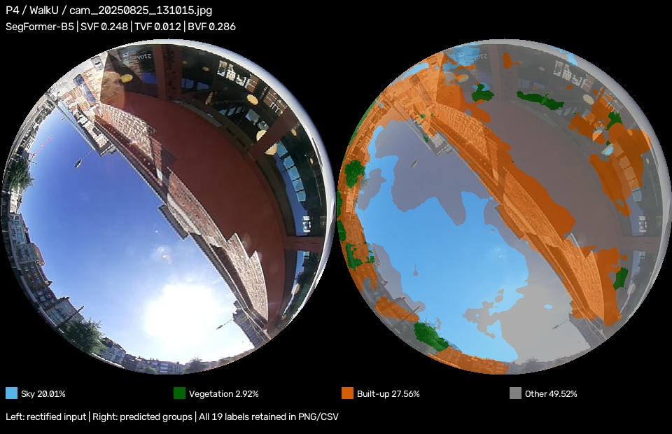
Sky 20.0% ? Veg 2.9% ? Built 27.6% cam_20250825_131016.jpg Xception ? ADE20K Sky 49.3% ? Veg 0.3% ? Built 0.6% SegFormer-B5 ? Cityscapes 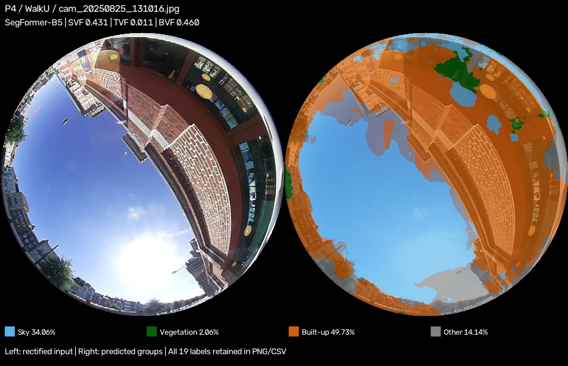
Sky 34.1% ? Veg 2.1% ? Built 49.7% cam_20250825_131017.jpg Xception ? ADE20K Sky 50.3% ? Veg 0.2% ? Built 0.7% SegFormer-B5 ? Cityscapes 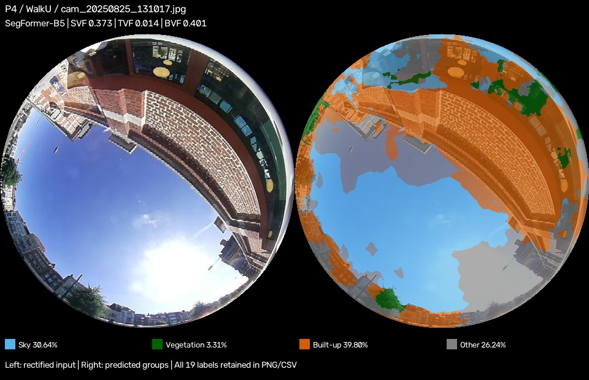
Sky 30.6% ? Veg 3.3% ? Built 39.8% cam_20250825_131018.jpg Xception ? ADE20K Sky 45.0% ? Veg 0.4% ? Built 10.8% SegFormer-B5 ? Cityscapes 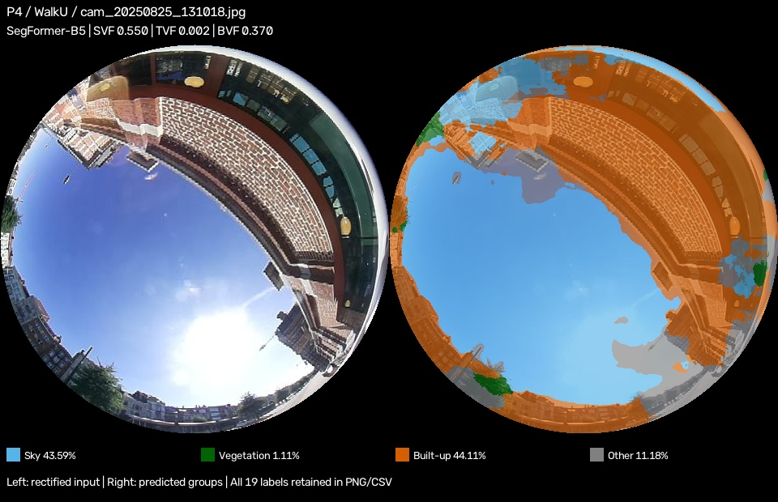
Sky 43.6% ? Veg 1.1% ? Built 44.1% cam_20250825_131019.jpg Xception ? ADE20K Sky 53.8% ? Veg 0.3% ? Built 12.9% SegFormer-B5 ? Cityscapes 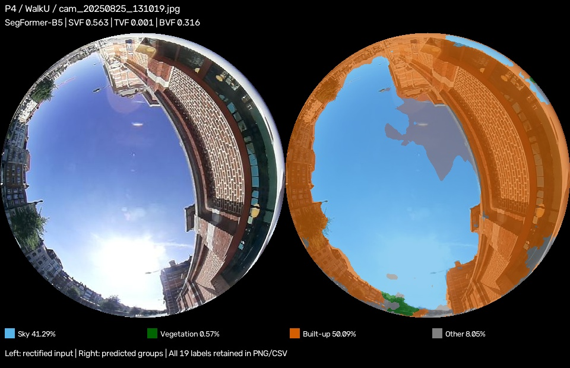
Sky 41.3% ? Veg 0.6% ? Built 50.1% cam_20250825_131020.jpg Xception ? ADE20K Sky 55.3% ? Veg 0.0% ? Built 8.5% SegFormer-B5 ? Cityscapes 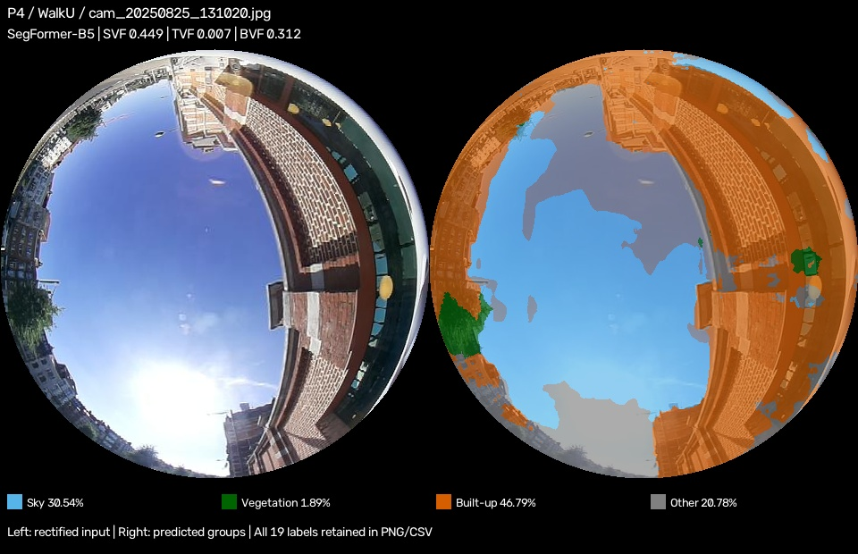
Sky 30.5% ? Veg 1.9% ? Built 46.8% cam_20250825_131021.jpg Xception ? ADE20K Sky 57.7% ? Veg 0.7% ? Built 6.0% SegFormer-B5 ? Cityscapes 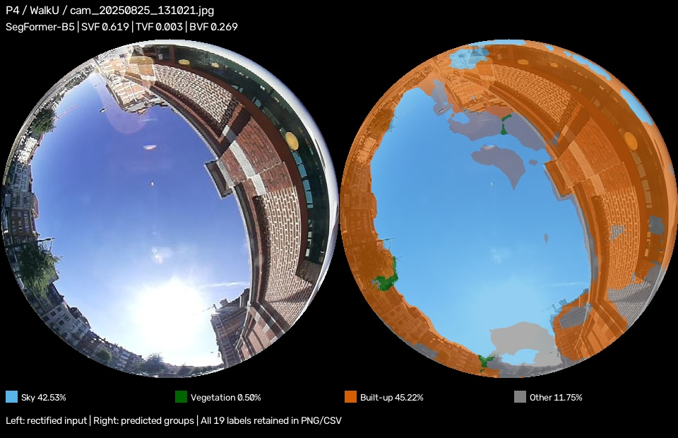
Sky 42.5% ? Veg 0.5% ? Built 45.2% cam_20250825_131022.jpg Xception ? ADE20K Sky 61.8% ? Veg 0.3% ? Built 8.4% SegFormer-B5 ? Cityscapes 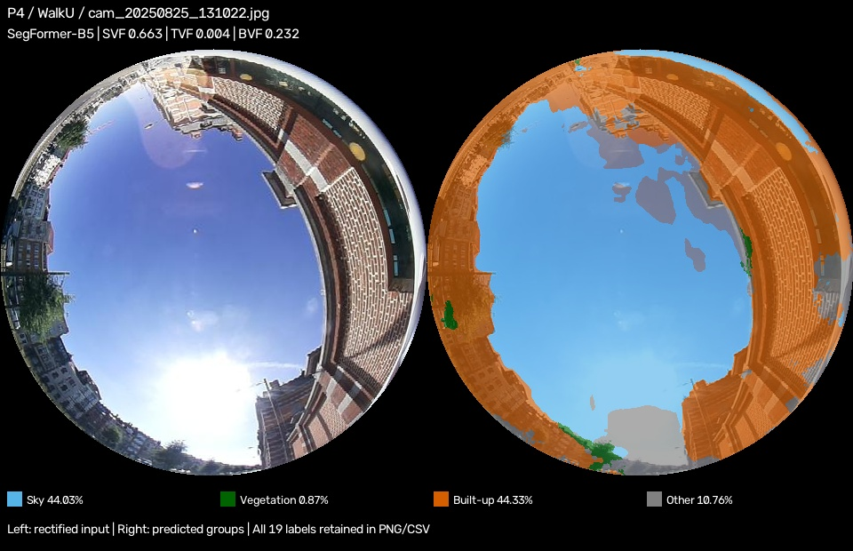
Sky 44.0% ? Veg 0.9% ? Built 44.3% cam_20250825_131023.jpg Xception ? ADE20K Sky 61.9% ? Veg 1.0% ? Built 9.2% SegFormer-B5 ? Cityscapes 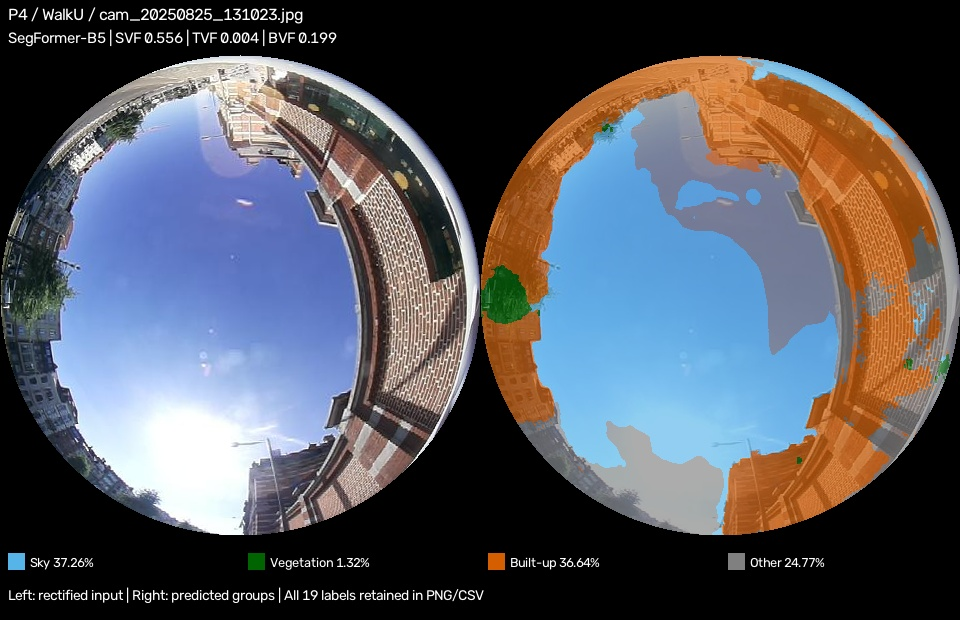
Sky 37.3% ? Veg 1.3% ? Built 36.6% cam_20250825_131024.jpg Xception ? ADE20K Sky 57.5% ? Veg 0.0% ? Built 7.8% SegFormer-B5 ? Cityscapes 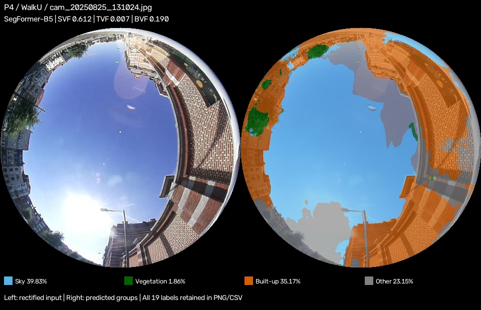
Sky 39.8% ? Veg 1.9% ? Built 35.2% cam_20250825_131025.jpg Xception ? ADE20K Sky 45.9% ? Veg 0.0% ? Built 11.5% SegFormer-B5 ? Cityscapes 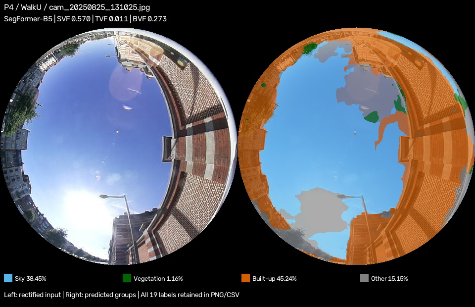
Sky 38.5% ? Veg 1.2% ? Built 45.2% cam_20250825_131026.jpg Xception ? ADE20K Sky 56.8% ? Veg 0.0% ? Built 20.7% SegFormer-B5 ? Cityscapes 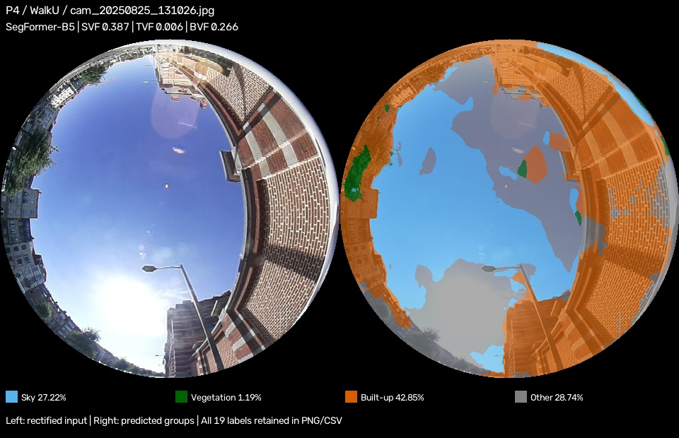
Sky 27.2% ? Veg 1.2% ? Built 42.9% cam_20250825_131027.jpg Xception ? ADE20K Sky 57.8% ? Veg 0.0% ? Built 19.4% SegFormer-B5 ? Cityscapes 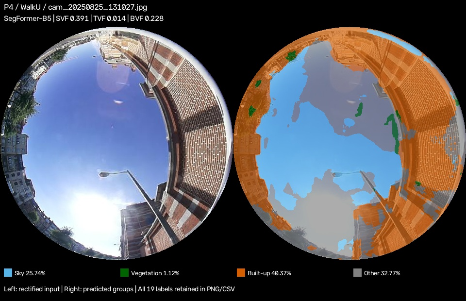
Sky 25.7% ? Veg 1.1% ? Built 40.4% cam_20250825_131028.jpg Xception ? ADE20K Sky 53.5% ? Veg 0.0% ? Built 27.3% SegFormer-B5 ? Cityscapes 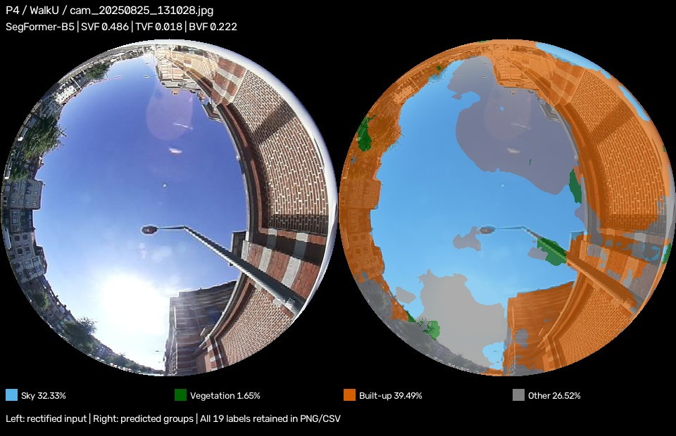
Sky 32.3% ? Veg 1.7% ? Built 39.5% cam_20250825_131029.jpg Xception ? ADE20K Sky 54.5% ? Veg 0.2% ? Built 37.3% SegFormer-B5 ? Cityscapes 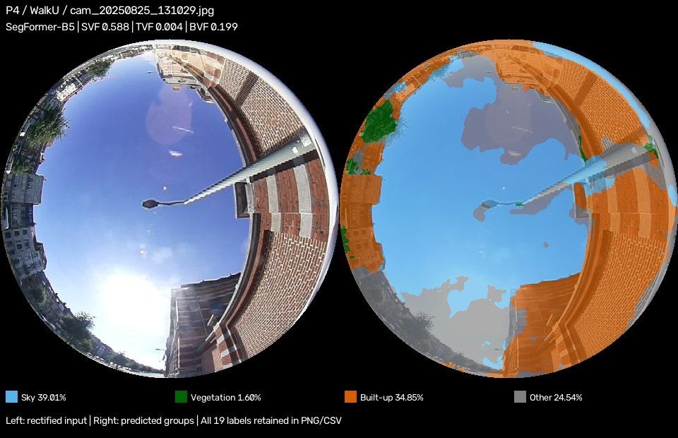
Sky 39.0% ? Veg 1.6% ? Built 34.8% cam_20250825_131030.jpg Xception ? ADE20K Sky 57.1% ? Veg 0.1% ? Built 28.6% SegFormer-B5 ? Cityscapes 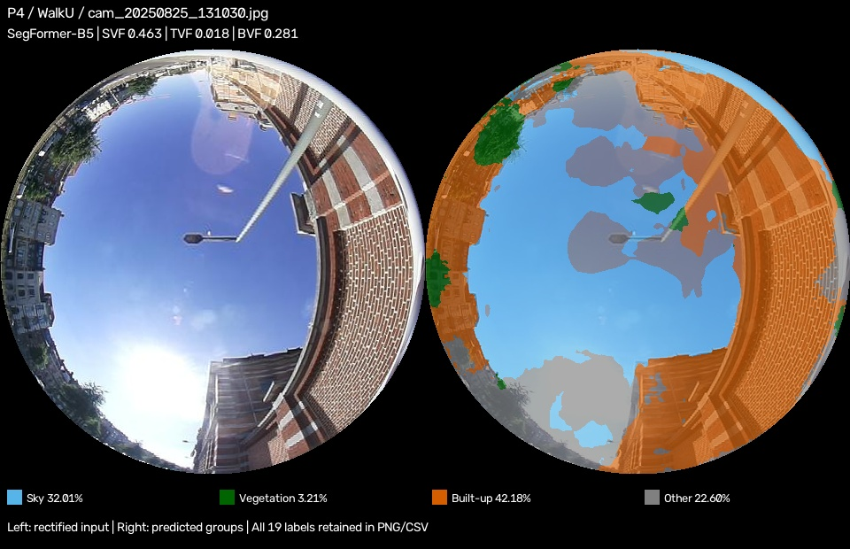
Sky 32.0% ? Veg 3.2% ? Built 42.2% cam_20250825_131031.jpg Xception ? ADE20K Sky 59.0% ? Veg 0.4% ? Built 13.3% SegFormer-B5 ? Cityscapes 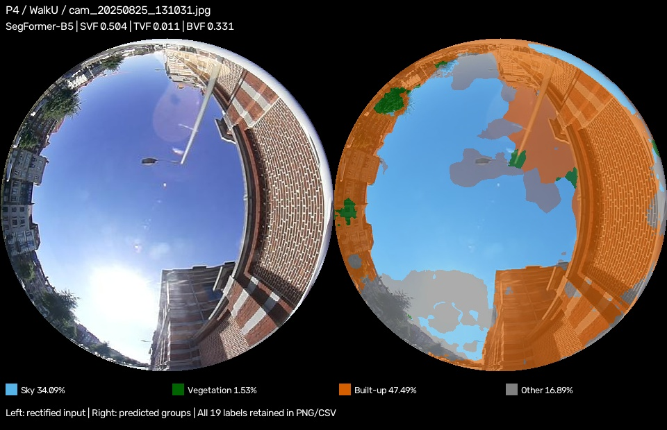
Sky 34.1% ? Veg 1.5% ? Built 47.5% cam_20250825_131032.jpg Xception ? ADE20K Sky 56.0% ? Veg 0.4% ? Built 15.4% SegFormer-B5 ? Cityscapes 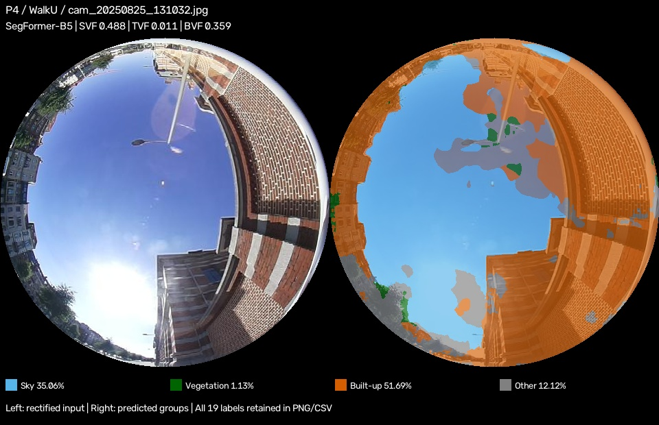
Sky 35.1% ? Veg 1.1% ? Built 51.7% cam_20250825_131033.jpg Xception ? ADE20K Sky 50.8% ? Veg 0.2% ? Built 31.0% SegFormer-B5 ? Cityscapes 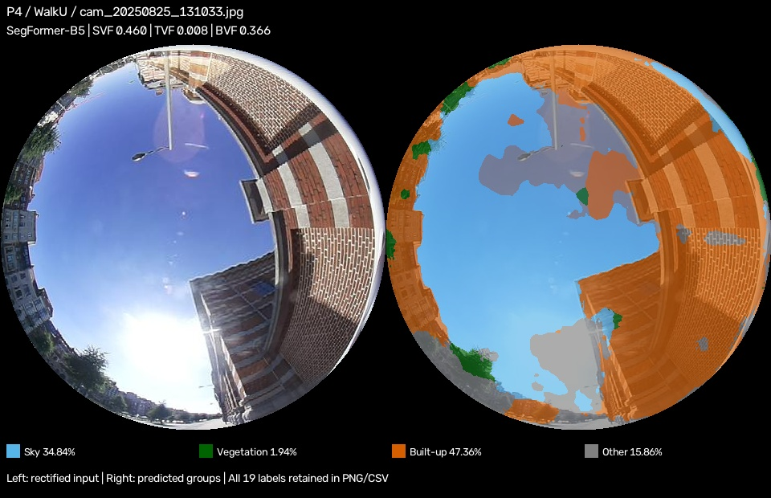
Sky 34.8% ? Veg 1.9% ? Built 47.4% cam_20250825_131034.jpg Xception ? ADE20K Sky 51.2% ? Veg 1.0% ? Built 15.9% SegFormer-B5 ? Cityscapes 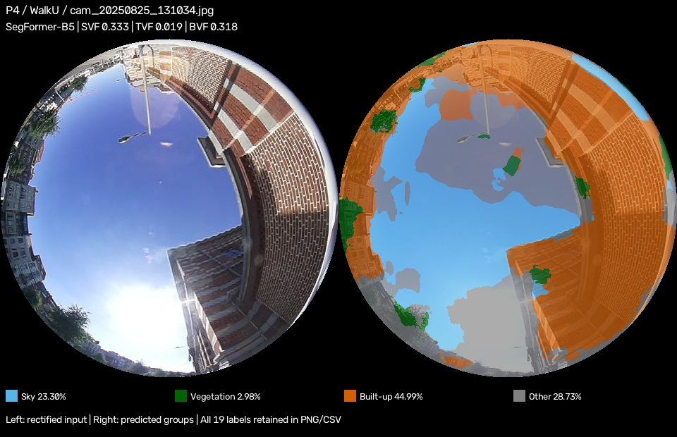
Sky 23.3% ? Veg 3.0% ? Built 45.0% cam_20250825_131035.jpg Xception ? ADE20K Sky 43.3% ? Veg 0.5% ? Built 15.5% SegFormer-B5 ? Cityscapes 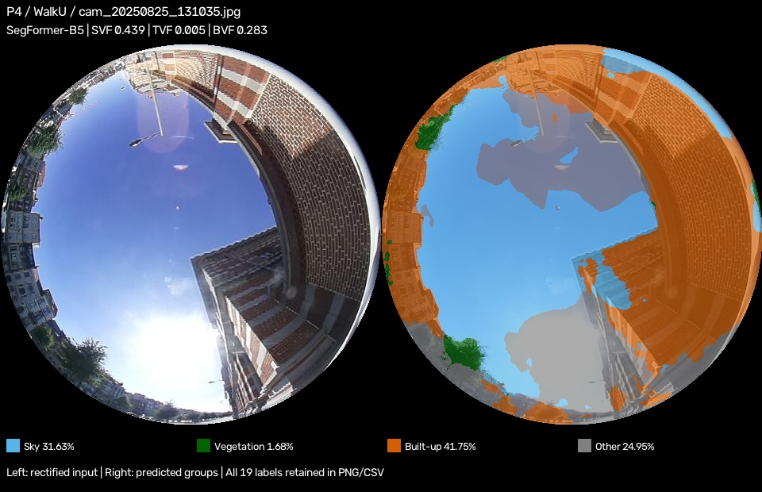
Sky 31.6% ? Veg 1.7% ? Built 41.7% cam_20250825_131036.jpg Xception ? ADE20K Sky 26.7% ? Veg 0.6% ? Built 18.8% SegFormer-B5 ? Cityscapes 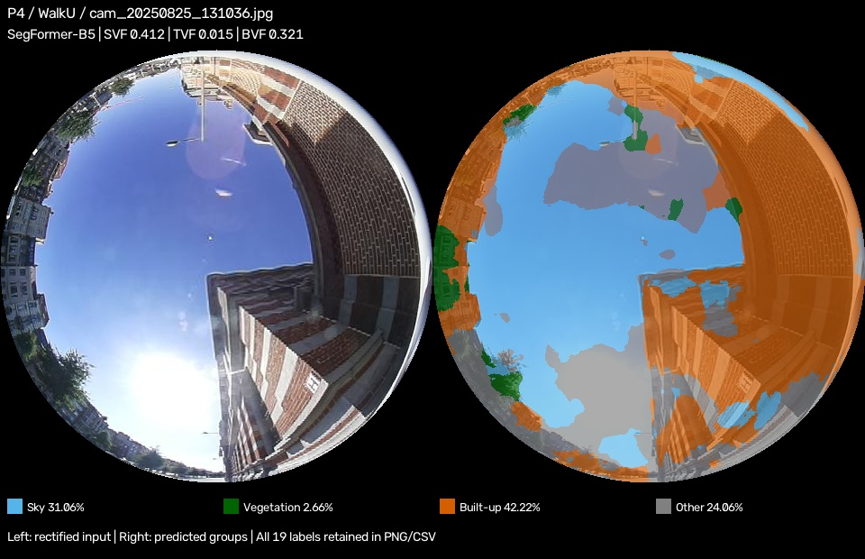
Sky 31.1% ? Veg 2.7% ? Built 42.2% cam_20250825_131037.jpg Xception ? ADE20K Sky 47.4% ? Veg 0.3% ? Built 16.6% SegFormer-B5 ? Cityscapes 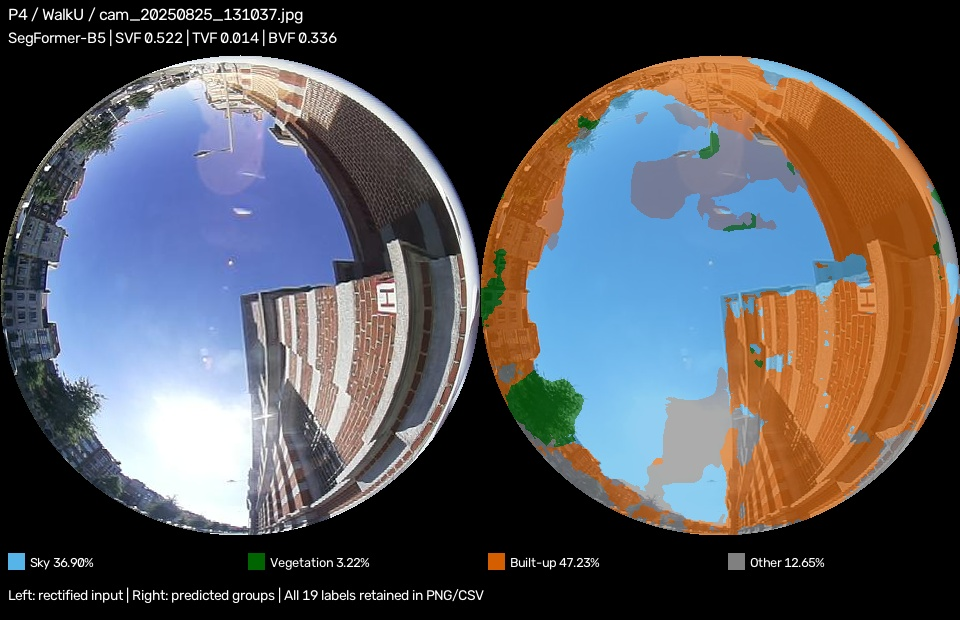
Sky 36.9% ? Veg 3.2% ? Built 47.2% cam_20250825_131038.jpg Xception ? ADE20K Sky 46.9% ? Veg 0.1% ? Built 40.5% SegFormer-B5 ? Cityscapes 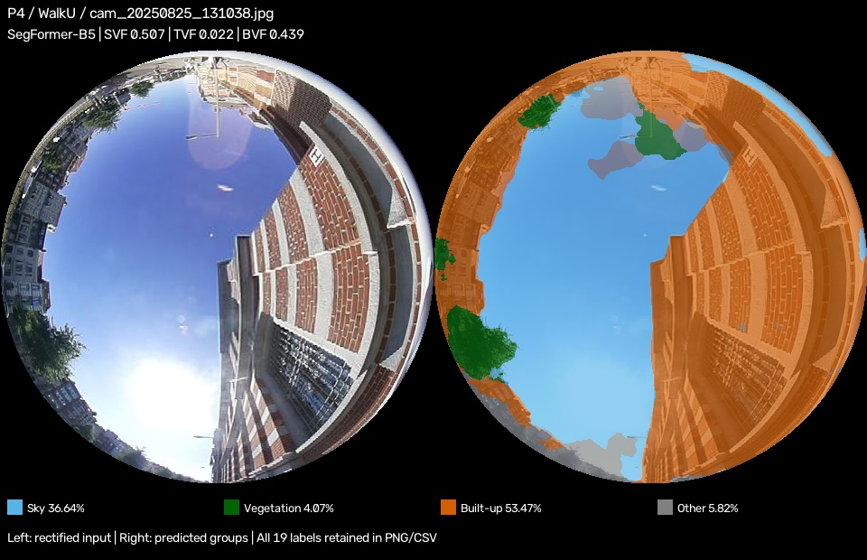
Sky 36.6% ? Veg 4.1% ? Built 53.5% cam_20250825_131039.jpg Xception ? ADE20K Sky 47.4% ? Veg 0.2% ? Built 40.8% SegFormer-B5 ? Cityscapes 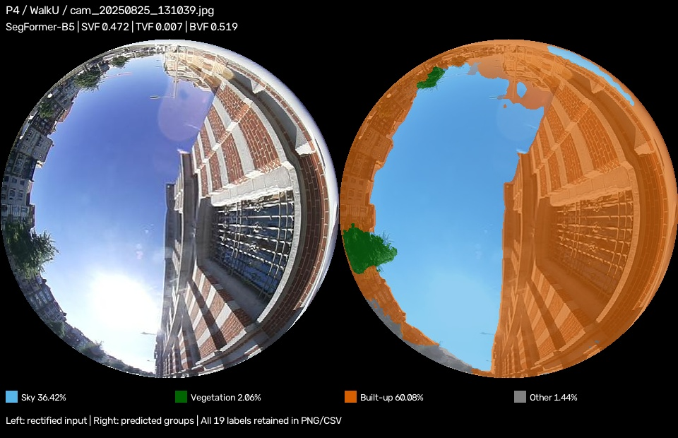
Sky 36.4% ? Veg 2.1% ? Built 60.1% cam_20250825_131040.jpg Xception ? ADE20K Sky 43.8% ? Veg 0.2% ? Built 12.4% SegFormer-B5 ? Cityscapes 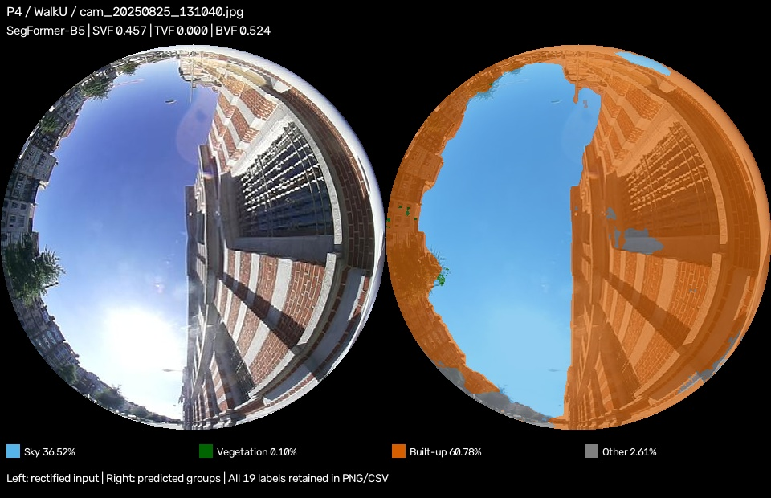
Sky 36.5% ? Veg 0.1% ? Built 60.8% cam_20250825_131041.jpg Xception ? ADE20K Sky 45.7% ? Veg 0.0% ? Built 38.3% SegFormer-B5 ? Cityscapes 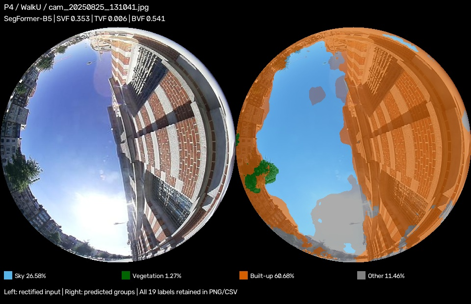
Sky 26.6% ? Veg 1.3% ? Built 60.7% cam_20250825_131042.jpg Xception ? ADE20K Sky 52.6% ? Veg 0.0% ? Built 26.3% SegFormer-B5 ? Cityscapes 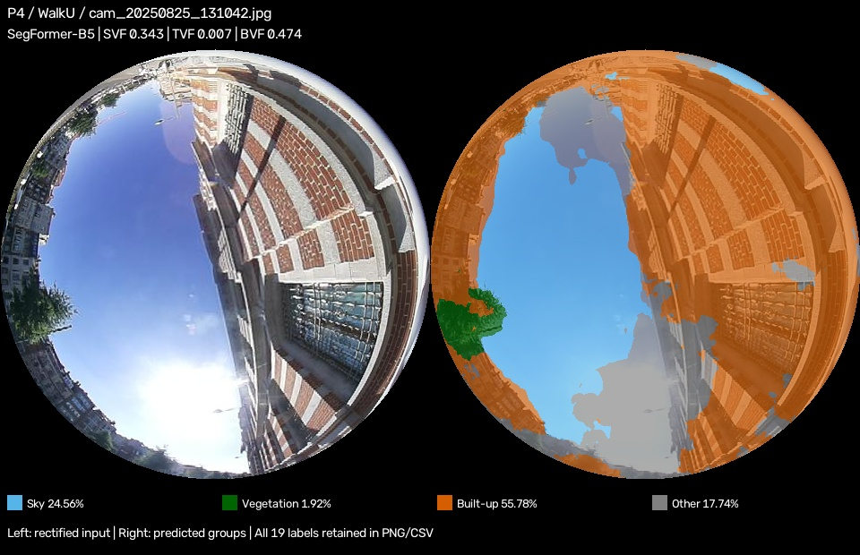
Sky 24.6% ? Veg 1.9% ? Built 55.8% cam_20250825_131043.jpg Xception ? ADE20K Sky 51.8% ? Veg 1.1% ? Built 22.6% SegFormer-B5 ? Cityscapes 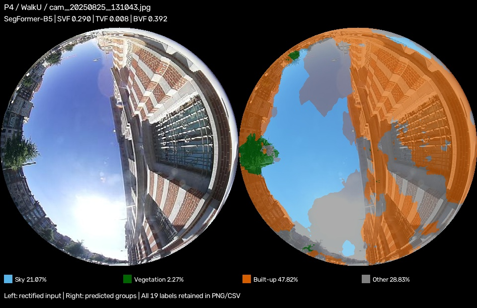
Sky 21.1% ? Veg 2.3% ? Built 47.8% cam_20250825_131044.jpg Xception ? ADE20K Sky 44.8% ? Veg 0.0% ? Built 39.1% SegFormer-B5 ? Cityscapes 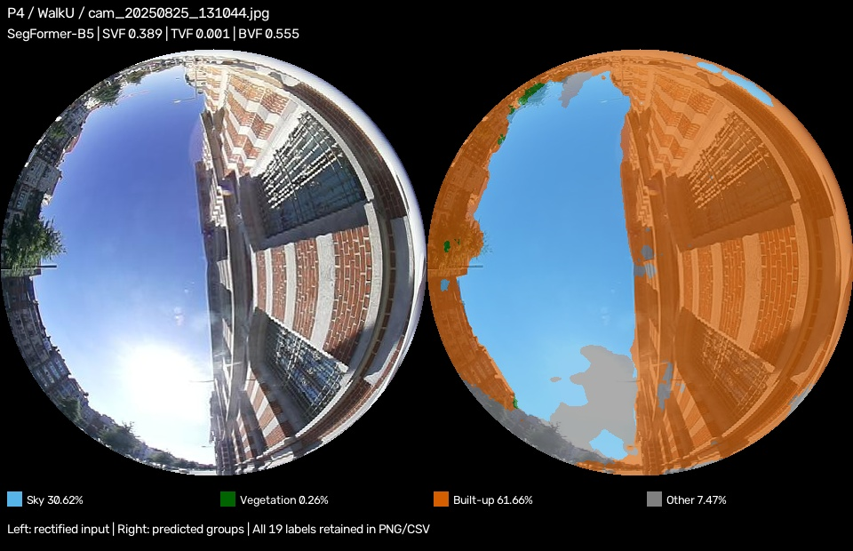
Sky 30.6% ? Veg 0.3% ? Built 61.7% cam_20250825_131045.jpg Xception ? ADE20K Sky 43.4% ? Veg 0.0% ? Built 47.7% SegFormer-B5 ? Cityscapes 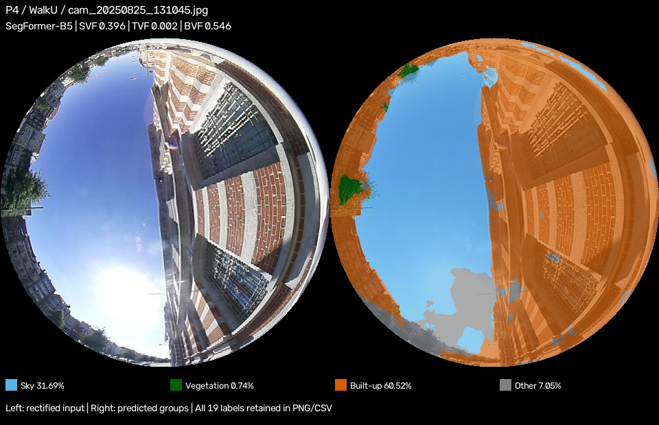
Sky 31.7% ? Veg 0.7% ? Built 60.5% cam_20250825_131046.jpg Xception ? ADE20K Sky 45.1% ? Veg 0.1% ? Built 31.7% SegFormer-B5 ? Cityscapes 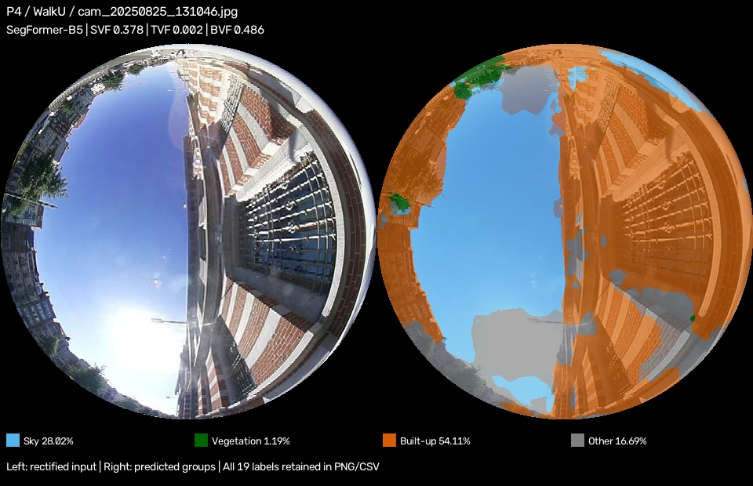
Sky 28.0% ? Veg 1.2% ? Built 54.1% cam_20250825_131047.jpg Xception ? ADE20K Sky 48.0% ? Veg 0.0% ? Built 11.6% SegFormer-B5 ? Cityscapes 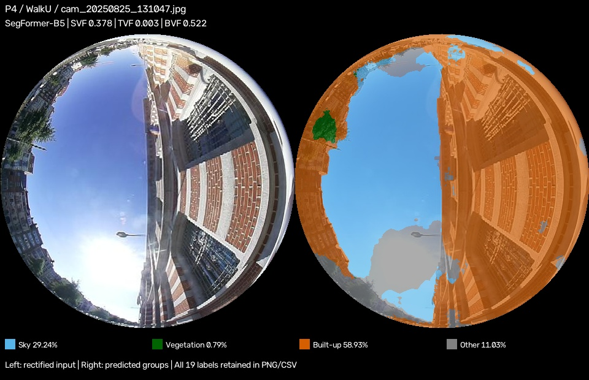
Sky 29.2% ? Veg 0.8% ? Built 58.9% cam_20250825_131048.jpg Xception ? ADE20K Sky 46.0% ? Veg 0.0% ? Built 17.3% SegFormer-B5 ? Cityscapes 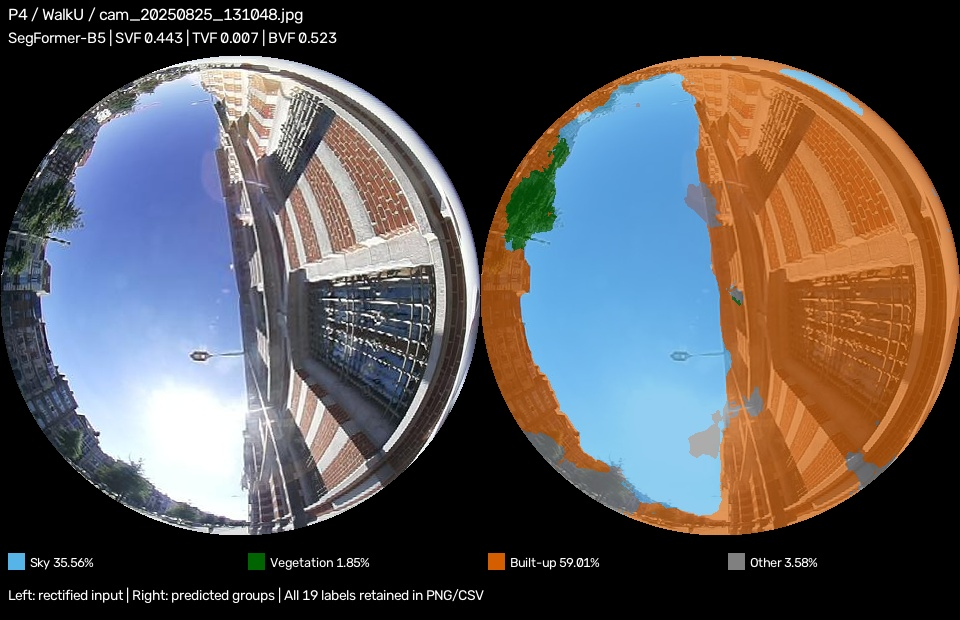
Sky 35.6% ? Veg 1.8% ? Built 59.0% cam_20250825_131049.jpg Xception ? ADE20K Sky 46.8% ? Veg 0.0% ? Built 15.8% SegFormer-B5 ? Cityscapes 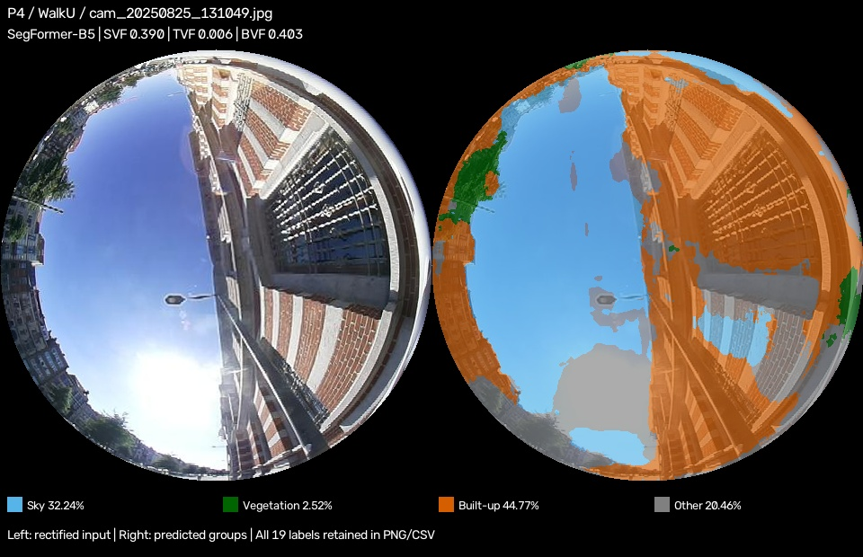
Sky 32.2% ? Veg 2.5% ? Built 44.8% cam_20250825_131050.jpg Xception ? ADE20K Sky 53.8% ? Veg 0.1% ? Built 22.8% SegFormer-B5 ? Cityscapes 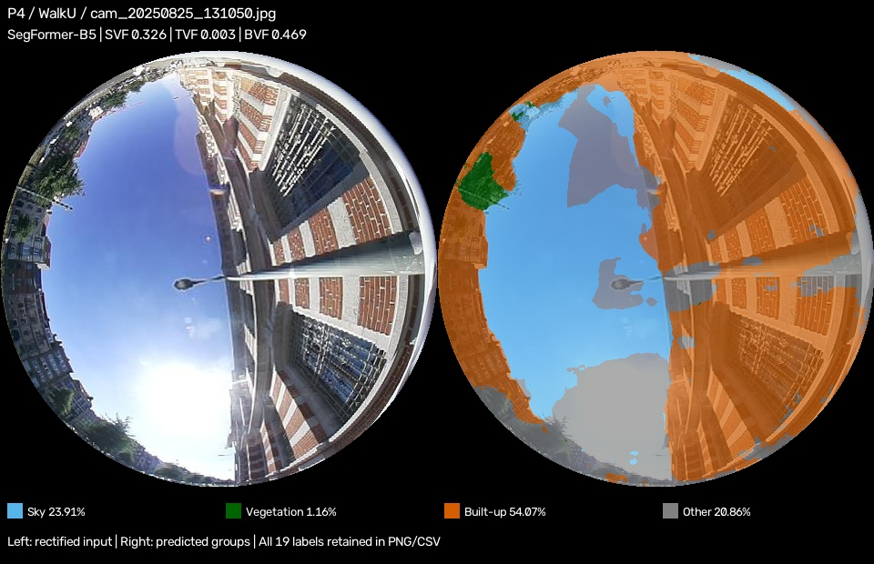
Sky 23.9% ? Veg 1.2% ? Built 54.1% cam_20250825_131051.jpg Xception ? ADE20K Sky 56.8% ? Veg 0.0% ? Built 10.8% SegFormer-B5 ? Cityscapes 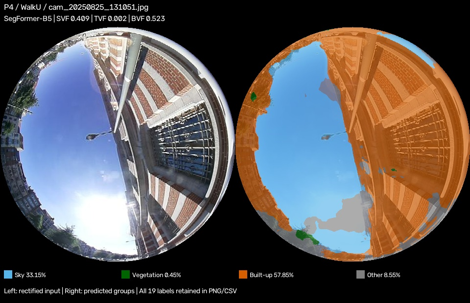
Sky 33.1% ? Veg 0.4% ? Built 57.9% cam_20250825_131052.jpg Xception ? ADE20K Sky 44.6% ? Veg 0.0% ? Built 29.9% SegFormer-B5 ? Cityscapes 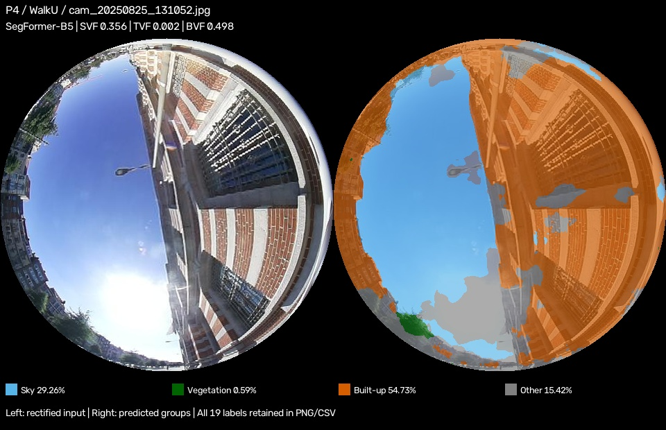
Sky 29.3% ? Veg 0.6% ? Built 54.7% cam_20250825_131053.jpg Xception ? ADE20K Sky 50.7% ? Veg 0.1% ? Built 25.0% SegFormer-B5 ? Cityscapes 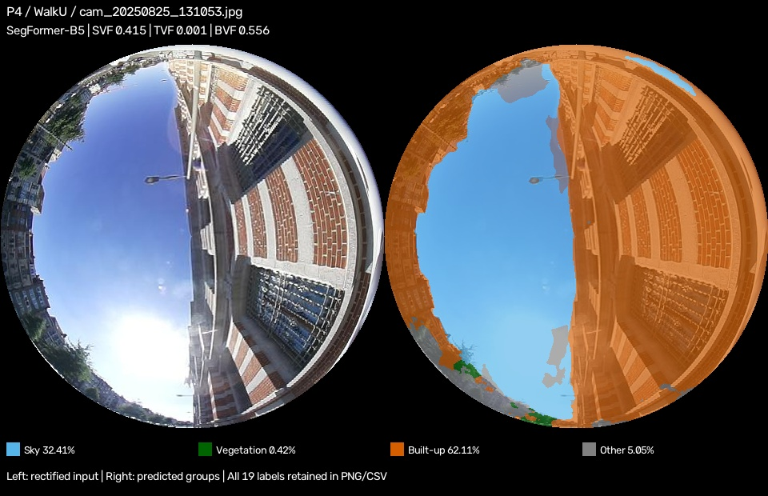
Sky 32.4% ? Veg 0.4% ? Built 62.1% cam_20250825_131054.jpg Xception ? ADE20K Sky 45.0% ? Veg 0.0% ? Built 34.1% SegFormer-B5 ? Cityscapes 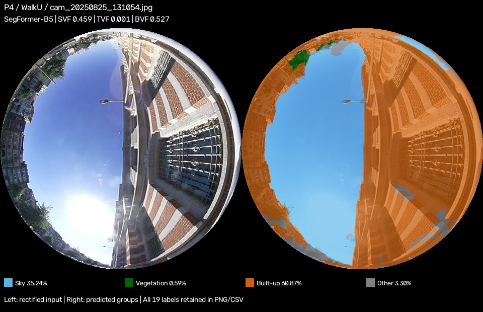
Sky 35.2% ? Veg 0.6% ? Built 60.9% cam_20250825_131055.jpg Xception ? ADE20K Sky 42.8% ? Veg 0.2% ? Built 38.1% SegFormer-B5 ? Cityscapes 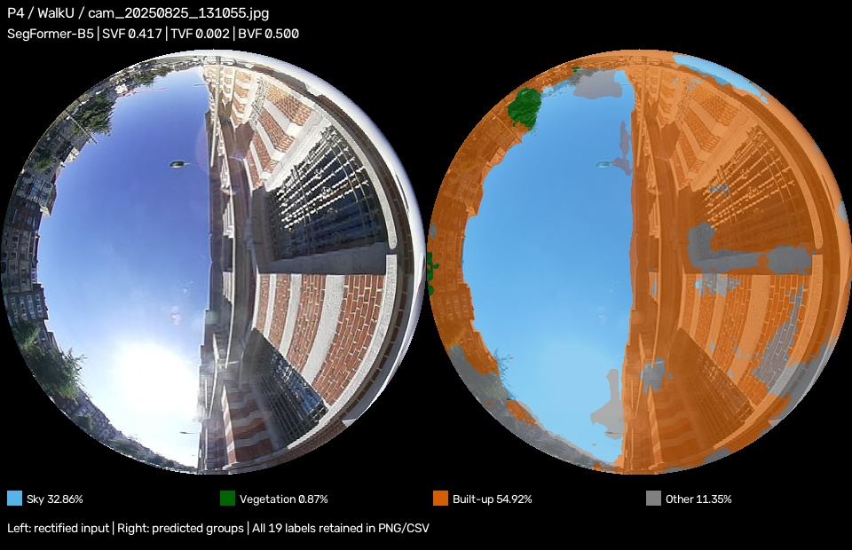
Sky 32.9% ? Veg 0.9% ? Built 54.9% cam_20250825_131056.jpg Xception ? ADE20K Sky 45.0% ? Veg 0.0% ? Built 0.4% SegFormer-B5 ? Cityscapes 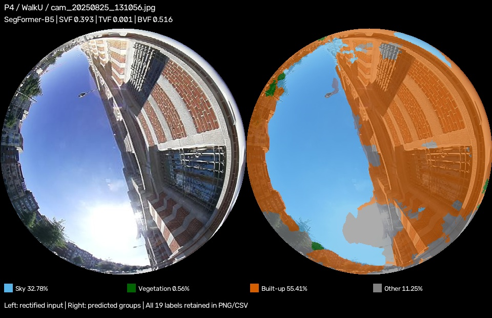
Sky 32.8% ? Veg 0.6% ? Built 55.4% cam_20250825_131057.jpg Xception ? ADE20K Sky 38.7% ? Veg 0.0% ? Built 0.1% SegFormer-B5 ? Cityscapes 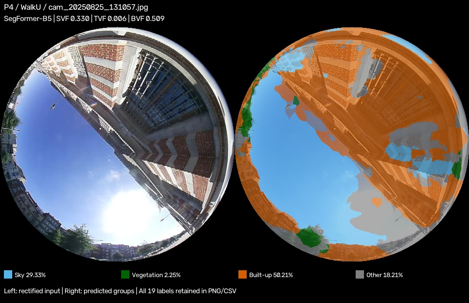
Sky 29.3% ? Veg 2.3% ? Built 50.2% cam_20250825_131058.jpg Xception ? ADE20K Sky 49.4% ? Veg 0.2% ? Built 8.4% SegFormer-B5 ? Cityscapes 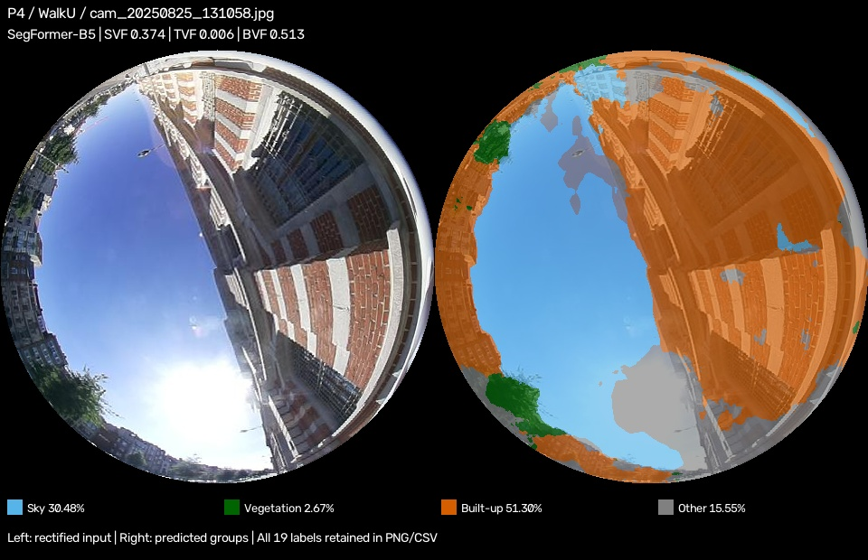
Sky 30.5% ? Veg 2.7% ? Built 51.3% cam_20250825_131059.jpg Xception ? ADE20K Sky 57.0% ? Veg 0.0% ? Built 9.8% SegFormer-B5 ? Cityscapes 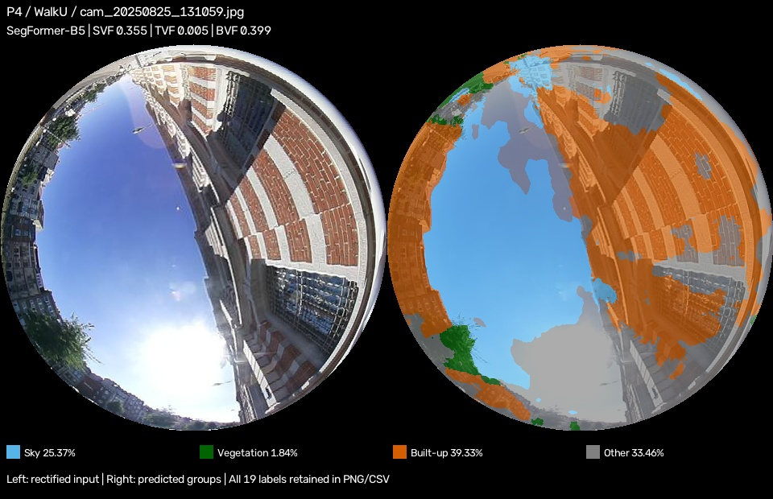
Sky 25.4% ? Veg 1.8% ? Built 39.3% cam_20250825_131100.jpg Xception ? ADE20K Sky 51.1% ? Veg 0.0% ? Built 15.8% SegFormer-B5 ? Cityscapes 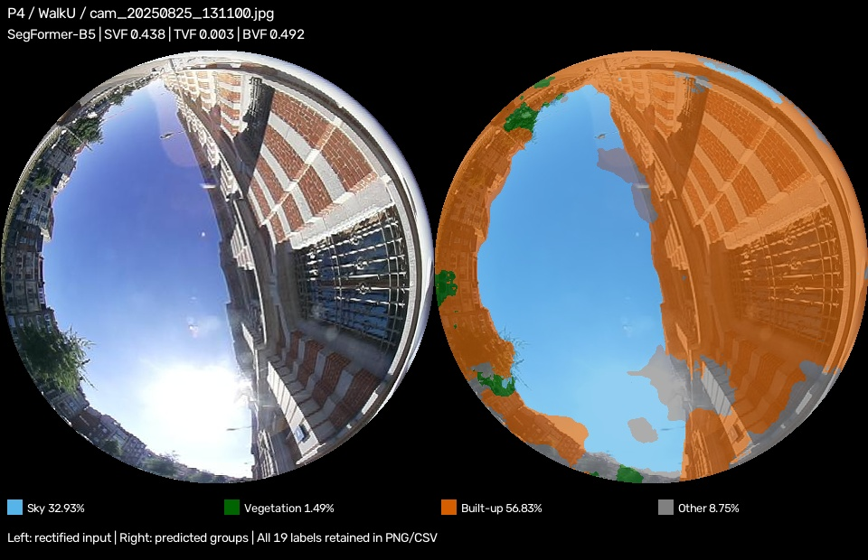
Sky 32.9% ? Veg 1.5% ? Built 56.8% cam_20250825_131101.jpg Xception ? ADE20K Sky 46.5% ? Veg 0.1% ? Built 32.6% SegFormer-B5 ? Cityscapes 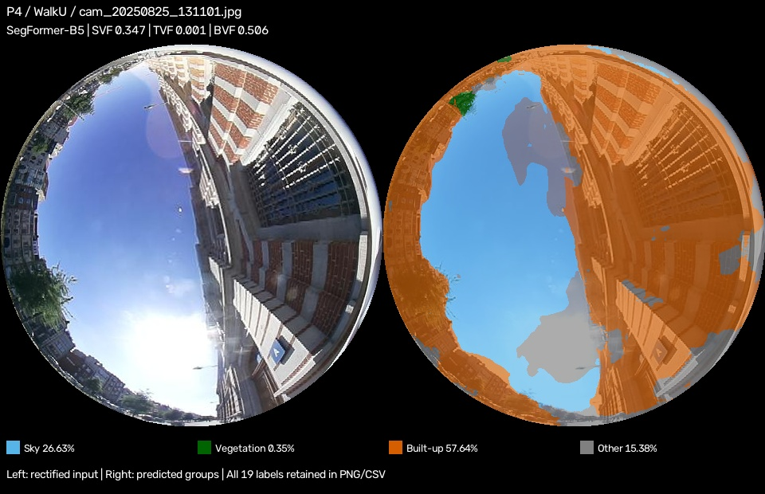
Sky 26.6% ? Veg 0.4% ? Built 57.6% cam_20250825_131102.jpg Xception ? ADE20K Sky 50.8% ? Veg 0.0% ? Built 38.4% SegFormer-B5 ? Cityscapes 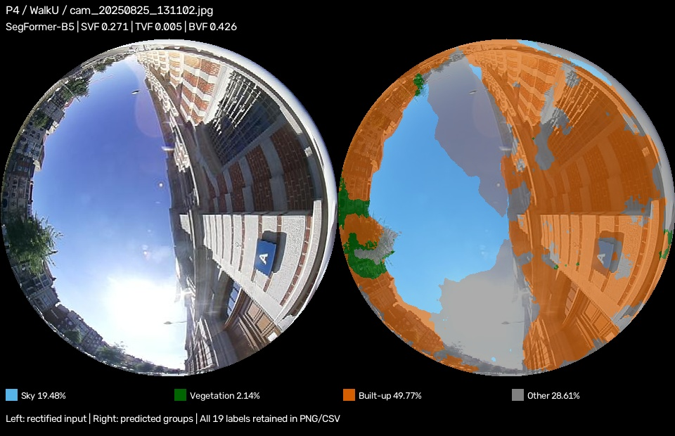
Sky 19.5% ? Veg 2.1% ? Built 49.8% cam_20250825_131107.jpg Xception ? ADE20K Sky 60.3% ? Veg 0.0% ? Built 26.3% SegFormer-B5 ? Cityscapes Sky 33.0% ? Veg 0.1% ? Built 51.9% cam_20250825_131108.jpg Xception ? ADE20K Sky 47.5% ? Veg 0.1% ? Built 49.4% SegFormer-B5 ? Cityscapes Sky 36.1% ? Veg 0.8% ? Built 58.0% cam_20250825_131109.jpg Xception ? ADE20K Sky 42.1% ? Veg 0.0% ? Built 54.1% SegFormer-B5 ? Cityscapes Sky 28.1% ? Veg 0.1% ? Built 59.0% cam_20250825_131110.jpg Xception ? ADE20K Sky 49.1% ? Veg 0.0% ? Built 44.7% SegFormer-B5 ? Cityscapes Sky 35.3% ? Veg 1.5% ? Built 51.0% cam_20250825_131111.jpg Xception ? ADE20K Sky 48.3% ? Veg 0.0% ? Built 49.0% SegFormer-B5 ? Cityscapes Sky 35.5% ? Veg 1.4% ? Built 52.9% cam_20250825_131112.jpg Xception ? ADE20K Sky 45.4% ? Veg 0.0% ? Built 52.7% SegFormer-B5 ? Cityscapes Sky 39.7% ? Veg 3.1% ? Built 55.3% cam_20250825_131113.jpg Xception ? ADE20K Sky 48.4% ? Veg 0.0% ? Built 37.6% SegFormer-B5 ? Cityscapes Sky 37.4% ? Veg 3.4% ? Built 42.6% cam_20250825_131114.jpg Xception ? ADE20K Sky 45.1% ? Veg 0.2% ? Built 50.9% SegFormer-B5 ? Cityscapes Sky 35.3% ? Veg 3.9% ? Built 47.3% cam_20250825_131115.jpg Xception ? ADE20K Sky 52.1% ? Veg 0.1% ? Built 21.4% SegFormer-B5 ? Cityscapes Sky 27.2% ? Veg 3.8% ? Built 36.0% cam_20250825_131116.jpg Xception ? ADE20K Sky 50.0% ? Veg 0.0% ? Built 18.7% SegFormer-B5 ? Cityscapes Sky 33.6% ? Veg 2.2% ? Built 43.6% cam_20250825_131117.jpg Xception ? ADE20K Sky 54.6% ? Veg 0.0% ? Built 27.0% SegFormer-B5 ? Cityscapes Sky 35.1% ? Veg 2.2% ? Built 53.7% cam_20250825_131118.jpg Xception ? ADE20K Sky 51.9% ? Veg 0.1% ? Built 14.9% SegFormer-B5 ? Cityscapes Sky 32.7% ? Veg 2.8% ? Built 40.3% cam_20250825_131119.jpg Xception ? ADE20K Sky 53.2% ? Veg 0.0% ? Built 17.6% SegFormer-B5 ? Cityscapes Sky 31.1% ? Veg 3.1% ? Built 46.8% cam_20250825_131120.jpg Xception ? ADE20K Sky 46.4% ? Veg 0.0% ? Built 37.7% SegFormer-B5 ? Cityscapes Sky 35.8% ? Veg 2.7% ? Built 58.3% cam_20250825_131121.jpg Xception ? ADE20K Sky 48.5% ? Veg 0.0% ? Built 20.2% SegFormer-B5 ? Cityscapes Sky 27.0% ? Veg 1.7% ? Built 40.7% cam_20250825_131122.jpg Xception ? ADE20K Sky 58.8% ? Veg 0.0% ? Built 7.2% SegFormer-B5 ? Cityscapes Sky 28.1% ? Veg 1.1% ? Built 46.5% cam_20250825_131123.jpg Xception ? ADE20K Sky 58.0% ? Veg 0.0% ? Built 11.3% SegFormer-B5 ? Cityscapes Sky 32.3% ? Veg 0.4% ? Built 39.4% cam_20250825_131124.jpg Xception ? ADE20K Sky 53.8% ? Veg 0.0% ? Built 19.4% SegFormer-B5 ? Cityscapes Sky 18.6% ? Veg 2.5% ? Built 25.6% cam_20250825_131125.jpg Xception ? ADE20K Sky 55.9% ? Veg 0.0% ? Built 18.9% SegFormer-B5 ? Cityscapes Sky 31.5% ? Veg 1.1% ? Built 52.4% cam_20250825_131126.jpg Xception ? ADE20K Sky 63.9% ? Veg 0.0% ? Built 14.3% SegFormer-B5 ? Cityscapes Sky 27.4% ? Veg 1.8% ? Built 33.1% cam_20250825_131127.jpg Xception ? ADE20K Sky 58.3% ? Veg 0.0% ? Built 16.3% SegFormer-B5 ? Cityscapes Sky 31.9% ? Veg 2.1% ? Built 43.4% cam_20250825_131128.jpg Xception ? ADE20K Sky 52.7% ? Veg 0.0% ? Built 43.0% SegFormer-B5 ? Cityscapes Sky 38.9% ? Veg 3.9% ? Built 51.0% cam_20250825_131129.jpg Xception ? ADE20K Sky 46.9% ? Veg 0.1% ? Built 49.6% SegFormer-B5 ? Cityscapes Sky 37.5% ? Veg 2.4% ? Built 48.5% cam_20250825_131130.jpg Xception ? ADE20K Sky 48.3% ? Veg 0.1% ? Built 40.0% SegFormer-B5 ? Cityscapes Sky 41.1% ? Veg 1.9% ? Built 43.6% cam_20250825_131131.jpg Xception ? ADE20K Sky 52.6% ? Veg 0.0% ? Built 26.5% SegFormer-B5 ? Cityscapes Sky 45.9% ? Veg 5.2% ? Built 42.4% cam_20250825_131132.jpg Xception ? ADE20K Sky 55.6% ? Veg 0.0% ? Built 41.1% SegFormer-B5 ? Cityscapes Sky 44.6% ? Veg 0.7% ? Built 42.6% cam_20250825_131133.jpg Xception ? ADE20K Sky 58.6% ? Veg 0.2% ? Built 17.4% SegFormer-B5 ? Cityscapes Sky 33.4% ? Veg 0.2% ? Built 42.6% cam_20250825_131134.jpg Xception ? ADE20K Sky 57.1% ? Veg 0.0% ? Built 16.0% SegFormer-B5 ? Cityscapes Sky 47.2% ? Veg 2.9% ? Built 40.1% cam_20250825_131135.jpg Xception ? ADE20K Sky 60.0% ? Veg 0.0% ? Built 5.7% SegFormer-B5 ? Cityscapes Sky 46.8% ? Veg 2.8% ? Built 38.6% cam_20250825_131136.jpg Xception ? ADE20K Sky 57.0% ? Veg 0.0% ? Built 7.2% SegFormer-B5 ? Cityscapes Sky 48.3% ? Veg 2.6% ? Built 42.3% cam_20250825_131137.jpg Xception ? ADE20K Sky 57.2% ? Veg 0.0% ? Built 14.1% SegFormer-B5 ? Cityscapes Sky 49.7% ? Veg 2.3% ? Built 42.2% cam_20250825_131138.jpg Xception ? ADE20K Sky 57.3% ? Veg 0.0% ? Built 10.6% SegFormer-B5 ? Cityscapes Sky 51.6% ? Veg 4.0% ? Built 38.2% cam_20250825_131139.jpg Xception ? ADE20K Sky 54.0% ? Veg 0.0% ? Built 9.6% SegFormer-B5 ? Cityscapes Sky 54.0% ? Veg 1.1% ? Built 40.3% cam_20250825_131140.jpg Xception ? ADE20K Sky 53.7% ? Veg 0.1% ? Built 3.9% SegFormer-B5 ? Cityscapes Sky 49.1% ? Veg 2.7% ? Built 41.5% cam_20250825_131141.jpg Xception ? ADE20K Sky 59.1% ? Veg 0.4% ? Built 9.0% SegFormer-B5 ? Cityscapes Sky 45.0% ? Veg 5.2% ? Built 37.9% cam_20250825_131142.jpg Xception ? ADE20K Sky 57.1% ? Veg 0.7% ? Built 7.6% SegFormer-B5 ? Cityscapes Sky 47.8% ? Veg 5.8% ? Built 38.9% cam_20250825_131143.jpg Xception ? ADE20K Sky 55.7% ? Veg 0.0% ? Built 4.3% SegFormer-B5 ? Cityscapes Sky 45.9% ? Veg 2.1% ? Built 40.2% cam_20250825_131144.jpg Xception ? ADE20K Sky 56.6% ? Veg 0.0% ? Built 4.2% SegFormer-B5 ? Cityscapes Sky 50.5% ? Veg 2.7% ? Built 42.1% cam_20250825_131145.jpg Xception ? ADE20K Sky 56.1% ? Veg 0.0% ? Built 7.4% SegFormer-B5 ? Cityscapes Sky 46.9% ? Veg 2.1% ? Built 41.2% cam_20250825_131146.jpg Xception ? ADE20K Sky 55.7% ? Veg 0.0% ? Built 12.0% SegFormer-B5 ? Cityscapes Sky 42.2% ? Veg 3.3% ? Built 37.4% cam_20250825_131147.jpg Xception ? ADE20K Sky 56.2% ? Veg 0.4% ? Built 11.7% SegFormer-B5 ? Cityscapes Sky 33.9% ? Veg 3.3% ? Built 37.0% cam_20250825_131148.jpg Xception ? ADE20K Sky 57.7% ? Veg 0.2% ? Built 20.4% SegFormer-B5 ? Cityscapes Sky 41.5% ? Veg 2.6% ? Built 39.0% cam_20250825_131149.jpg Xception ? ADE20K Sky 56.1% ? Veg 0.0% ? Built 25.5% SegFormer-B5 ? Cityscapes Sky 51.8% ? Veg 4.4% ? Built 36.6% cam_20250825_131150.jpg Xception ? ADE20K Sky 54.7% ? Veg 0.0% ? Built 37.7% SegFormer-B5 ? Cityscapes Sky 40.3% ? Veg 4.7% ? Built 32.2% cam_20250825_131151.jpg Xception ? ADE20K Sky 57.6% ? Veg 0.1% ? Built 35.4% SegFormer-B5 ? Cityscapes Sky 45.0% ? Veg 4.9% ? Built 35.8% cam_20250825_131152.jpg Xception ? ADE20K Sky 54.7% ? Veg 0.0% ? Built 34.8% SegFormer-B5 ? Cityscapes Sky 37.9% ? Veg 3.0% ? Built 41.4% cam_20250825_131153.jpg Xception ? ADE20K Sky 59.3% ? Veg 0.0% ? Built 25.5% SegFormer-B5 ? Cityscapes Sky 44.9% ? Veg 4.0% ? Built 41.7% cam_20250825_131154.jpg Xception ? ADE20K Sky 57.5% ? Veg 0.2% ? Built 33.0% SegFormer-B5 ? Cityscapes Sky 43.6% ? Veg 4.2% ? Built 33.5% cam_20250825_131155.jpg Xception ? ADE20K Sky 62.9% ? Veg 0.0% ? Built 26.6% SegFormer-B5 ? Cityscapes Sky 46.0% ? Veg 3.4% ? Built 36.0% cam_20250825_131156.jpg Xception ? ADE20K Sky 56.8% ? Veg 0.5% ? Built 40.9% SegFormer-B5 ? Cityscapes Sky 44.0% ? Veg 3.1% ? Built 47.4% cam_20250825_131157.jpg Xception ? ADE20K Sky 53.9% ? Veg 0.0% ? Built 40.8% SegFormer-B5 ? Cityscapes Sky 37.1% ? Veg 1.9% ? Built 48.2% cam_20250825_131158.jpg Xception ? ADE20K Sky 51.4% ? Veg 0.1% ? Built 28.8% SegFormer-B5 ? Cityscapes Sky 31.3% ? Veg 3.0% ? Built 43.5% cam_20250825_131159.jpg Xception ? ADE20K Sky 44.9% ? Veg 0.0% ? Built 15.4% SegFormer-B5 ? Cityscapes Sky 39.3% ? Veg 3.8% ? Built 34.4% cam_20250825_131200.jpg Xception ? ADE20K Sky 50.1% ? Veg 0.2% ? Built 20.3% SegFormer-B5 ? Cityscapes Sky 40.7% ? Veg 2.5% ? Built 48.7% cam_20250825_131201.jpg Xception ? ADE20K Sky 46.0% ? Veg 0.2% ? Built 31.7% SegFormer-B5 ? Cityscapes Sky 39.4% ? Veg 2.1% ? Built 51.4% cam_20250825_131202.jpg Xception ? ADE20K Sky 45.4% ? Veg 1.6% ? Built 46.3% SegFormer-B5 ? Cityscapes Sky 33.8% ? Veg 2.4% ? Built 52.8% cam_20250825_131203.jpg Xception ? ADE20K Sky 43.8% ? Veg 2.4% ? Built 46.3% SegFormer-B5 ? Cityscapes Sky 38.3% ? Veg 3.3% ? Built 46.2% cam_20250825_131204.jpg Xception ? ADE20K Sky 44.1% ? Veg 1.0% ? Built 52.6% SegFormer-B5 ? Cityscapes Sky 33.5% ? Veg 2.8% ? Built 57.9% cam_20250825_131205.jpg Xception ? ADE20K Sky 41.0% ? Veg 0.0% ? Built 53.7% SegFormer-B5 ? Cityscapes Sky 34.7% ? Veg 2.2% ? Built 54.5% cam_20250825_131206.jpg Xception ? ADE20K Sky 41.0% ? Veg 0.3% ? Built 54.5% SegFormer-B5 ? Cityscapes Sky 33.6% ? Veg 1.0% ? Built 53.9% cam_20250825_131207.jpg Xception ? ADE20K Sky 40.3% ? Veg 1.5% ? Built 57.6% SegFormer-B5 ? Cityscapes Sky 33.9% ? Veg 0.2% ? Built 60.3% cam_20250825_131208.jpg Xception ? ADE20K Sky 45.7% ? Veg 2.2% ? Built 11.2% SegFormer-B5 ? Cityscapes Sky 46.5% ? Veg 2.7% ? Built 36.7% cam_20250825_131209.jpg Xception ? ADE20K Sky 49.1% ? Veg 0.1% ? Built 39.0% SegFormer-B5 ? Cityscapes Sky 43.7% ? Veg 1.4% ? Built 43.7% cam_20250825_131210.jpg Xception ? ADE20K Sky 46.6% ? Veg 0.0% ? Built 34.1% SegFormer-B5 ? Cityscapes Sky 43.8% ? Veg 1.4% ? Built 46.5% cam_20250825_131211.jpg Xception ? ADE20K Sky 41.8% ? Veg 0.0% ? Built 55.2% SegFormer-B5 ? Cityscapes Sky 33.7% ? Veg 2.1% ? Built 51.3% cam_20250825_131212.jpg Xception ? ADE20K Sky 40.5% ? Veg 0.0% ? Built 58.8% SegFormer-B5 ? Cityscapes Sky 36.5% ? Veg 1.8% ? Built 56.5% cam_20250825_131213.jpg Xception ? ADE20K Sky 43.9% ? Veg 0.0% ? Built 53.1% SegFormer-B5 ? Cityscapes Sky 30.4% ? Veg 2.0% ? Built 51.5% cam_20250825_131214.jpg Xception ? ADE20K Sky 45.6% ? Veg 0.1% ? Built 48.4% SegFormer-B5 ? Cityscapes Sky 21.1% ? Veg 1.7% ? Built 54.5% cam_20250825_131215.jpg Xception ? ADE20K Sky 47.6% ? Veg 0.0% ? Built 43.0% SegFormer-B5 ? Cityscapes Sky 36.7% ? Veg 0.0% ? Built 58.2% cam_20250825_131216.jpg Xception ? ADE20K Sky 42.2% ? Veg 0.1% ? Built 57.2% SegFormer-B5 ? Cityscapes Sky 36.9% ? Veg 1.3% ? Built 58.0% cam_20250825_131217.jpg Xception ? ADE20K Sky 46.0% ? Veg 0.4% ? Built 50.9% SegFormer-B5 ? Cityscapes Sky 41.9% ? Veg 1.1% ? Built 51.2% cam_20250825_131218.jpg Xception ? ADE20K Sky 53.8% ? Veg 1.3% ? Built 18.0% SegFormer-B5 ? Cityscapes Sky 46.9% ? Veg 1.3% ? Built 49.3% cam_20250825_131219.jpg Xception ? ADE20K Sky 60.7% ? Veg 0.0% ? Built 2.3% SegFormer-B5 ? Cityscapes Sky 43.0% ? Veg 1.7% ? Built 49.0% cam_20250825_131220.jpg Xception ? ADE20K Sky 54.0% ? Veg 0.4% ? Built 0.3% SegFormer-B5 ? Cityscapes Sky 41.5% ? Veg 1.1% ? Built 49.3% cam_20250825_131221.jpg Xception ? ADE20K Sky 54.1% ? Veg 0.9% ? Built 2.1% SegFormer-B5 ? Cityscapes Sky 42.1% ? Veg 1.3% ? Built 50.5% cam_20250825_131222.jpg Xception ? ADE20K Sky 54.4% ? Veg 1.7% ? Built 6.8% SegFormer-B5 ? Cityscapes Sky 44.6% ? Veg 1.2% ? Built 50.0% cam_20250825_131223.jpg Xception ? ADE20K Sky 57.3% ? Veg 0.5% ? Built 1.6% SegFormer-B5 ? Cityscapes Sky 48.0% ? Veg 0.1% ? Built 46.4% cam_20250825_131224.jpg Xception ? ADE20K Sky 58.6% ? Veg 0.1% ? Built 0.4% SegFormer-B5 ? Cityscapes Sky 50.3% ? Veg 0.1% ? Built 42.1% cam_20250825_131225.jpg Xception ? ADE20K Sky 59.2% ? Veg 0.1% ? Built 5.7% SegFormer-B5 ? Cityscapes Sky 44.1% ? Veg 0.4% ? Built 40.4% cam_20250825_131226.jpg Xception ? ADE20K Sky 59.7% ? Veg 2.5% ? Built 3.4% SegFormer-B5 ? Cityscapes Sky 50.7% ? Veg 0.3% ? Built 46.7% cam_20250825_131227.jpg Xception ? ADE20K Sky 61.8% ? Veg 1.7% ? Built 0.2% SegFormer-B5 ? Cityscapes Sky 51.3% ? Veg 0.5% ? Built 45.8% cam_20250825_131228.jpg Xception ? ADE20K Sky 56.2% ? Veg 0.0% ? Built 18.6% SegFormer-B5 ? Cityscapes Sky 56.6% ? Veg 0.3% ? Built 41.8% cam_20250825_131229.jpg Xception ? ADE20K Sky 61.9% ? Veg 0.2% ? Built 15.5% SegFormer-B5 ? Cityscapes Sky 53.4% ? Veg 1.2% ? Built 38.4% cam_20250825_131230.jpg Xception ? ADE20K Sky 60.5% ? Veg 0.1% ? Built 8.8% SegFormer-B5 ? Cityscapes Sky 52.1% ? Veg 0.3% ? Built 43.5% cam_20250825_131231.jpg Xception ? ADE20K Sky 63.1% ? Veg 0.2% ? Built 12.8% SegFormer-B5 ? Cityscapes Sky 49.0% ? Veg 0.5% ? Built 41.0% cam_20250825_131232.jpg Xception ? ADE20K Sky 58.9% ? Veg 0.1% ? Built 17.4% SegFormer-B5 ? Cityscapes Sky 46.4% ? Veg 0.8% ? Built 48.0% cam_20250825_131233.jpg Xception ? ADE20K Sky 62.6% ? Veg 0.1% ? Built 5.2% SegFormer-B5 ? Cityscapes Sky 40.3% ? Veg 1.9% ? Built 45.5% cam_20250825_131234.jpg Xception ? ADE20K Sky 62.2% ? Veg 0.3% ? Built 17.3% SegFormer-B5 ? Cityscapes Sky 47.2% ? Veg 1.3% ? Built 46.9% cam_20250825_131235.jpg Xception ? ADE20K Sky 57.3% ? Veg 0.0% ? Built 3.2% SegFormer-B5 ? Cityscapes Sky 46.0% ? Veg 0.4% ? Built 49.2% cam_20250825_131236.jpg Xception ? ADE20K Sky 55.6% ? Veg 0.1% ? Built 1.5% SegFormer-B5 ? Cityscapes Sky 34.3% ? Veg 0.7% ? Built 49.3% cam_20250825_131237.jpg Xception ? ADE20K Sky 55.5% ? Veg 0.0% ? Built 0.1% SegFormer-B5 ? Cityscapes Sky 34.4% ? Veg 0.4% ? Built 49.9% cam_20250825_131238.jpg Xception ? ADE20K Sky 51.8% ? Veg 0.0% ? Built 0.1% SegFormer-B5 ? Cityscapes Sky 27.5% ? Veg 0.8% ? Built 48.3% cam_20250825_131239.jpg Xception ? ADE20K Sky 51.0% ? Veg 0.0% ? Built 10.0% SegFormer-B5 ? Cityscapes Sky 43.0% ? Veg 1.0% ? Built 46.5% cam_20250825_131240.jpg Xception ? ADE20K Sky 58.1% ? Veg 0.0% ? Built 2.5% SegFormer-B5 ? Cityscapes Sky 36.0% ? Veg 1.7% ? Built 43.8% cam_20250825_131241.jpg Xception ? ADE20K Sky 56.6% ? Veg 0.0% ? Built 4.5% SegFormer-B5 ? Cityscapes Sky 45.0% ? Veg 0.9% ? Built 47.7% cam_20250825_131242.jpg Xception ? ADE20K Sky 60.6% ? Veg 0.0% ? Built 12.6% SegFormer-B5 ? Cityscapes Sky 38.3% ? Veg 0.2% ? Built 44.0% cam_20250825_131243.jpg Xception ? ADE20K Sky 53.5% ? Veg 1.2% ? Built 28.4% SegFormer-B5 ? Cityscapes Sky 40.2% ? Veg 0.3% ? Built 49.6% cam_20250825_131244.jpg Xception ? ADE20K Sky 47.0% ? Veg 0.0% ? Built 37.6% SegFormer-B5 ? Cityscapes Sky 24.7% ? Veg 0.2% ? Built 67.1% cam_20250825_131245.jpg Xception ? ADE20K Sky 41.5% ? Veg 0.0% ? Built 45.5% SegFormer-B5 ? Cityscapes Sky 35.5% ? Veg 0.6% ? Built 60.7% cam_20250825_131246.jpg Xception ? ADE20K Sky 40.8% ? Veg 0.0% ? Built 52.8% SegFormer-B5 ? Cityscapes Sky 36.6% ? Veg 0.1% ? Built 61.5% cam_20250825_131247.jpg Xception ? ADE20K Sky 45.7% ? Veg 0.0% ? Built 39.6% SegFormer-B5 ? Cityscapes Sky 37.9% ? Veg 0.3% ? Built 57.4% cam_20250825_131248.jpg Xception ? ADE20K Sky 44.2% ? Veg 0.0% ? Built 48.0% SegFormer-B5 ? Cityscapes Sky 37.6% ? Veg 1.8% ? Built 60.1% cam_20250825_131249.jpg Xception ? ADE20K Sky 44.1% ? Veg 0.0% ? Built 29.0% SegFormer-B5 ? Cityscapes Sky 37.3% ? Veg 0.5% ? Built 58.9% cam_20250825_131250.jpg Xception ? ADE20K Sky 41.9% ? Veg 0.0% ? Built 13.1% SegFormer-B5 ? Cityscapes Sky 35.4% ? Veg 2.2% ? Built 50.8% cam_20250825_131251.jpg Xception ? ADE20K Sky 42.7% ? Veg 0.0% ? Built 18.0% SegFormer-B5 ? Cityscapes Sky 38.8% ? Veg 1.8% ? Built 47.2% cam_20250825_131252.jpg Xception ? ADE20K Sky 41.5% ? Veg 0.0% ? Built 37.4% SegFormer-B5 ? Cityscapes Sky 40.5% ? Veg 4.7% ? Built 42.6% cam_20250825_131253.jpg Xception ? ADE20K Sky 43.7% ? Veg 0.0% ? Built 26.8% SegFormer-B5 ? Cityscapes Sky 38.6% ? Veg 1.5% ? Built 37.6% cam_20250825_131254.jpg Xception ? ADE20K Sky 41.4% ? Veg 0.0% ? Built 52.3% SegFormer-B5 ? Cityscapes Sky 38.2% ? Veg 0.9% ? Built 53.9% cam_20250825_131255.jpg Xception ? ADE20K Sky 40.9% ? Veg 0.0% ? Built 57.8% SegFormer-B5 ? Cityscapes Sky 37.4% ? Veg 0.2% ? Built 58.5% cam_20250825_131256.jpg Xception ? ADE20K Sky 38.9% ? Veg 0.0% ? Built 54.8% SegFormer-B5 ? Cityscapes Sky 38.0% ? Veg 2.4% ? Built 52.1% cam_20250825_131257.jpg Xception ? ADE20K Sky 38.6% ? Veg 0.0% ? Built 60.6% SegFormer-B5 ? Cityscapes Sky 36.8% ? Veg 3.9% ? Built 53.3% cam_20250825_131258.jpg Xception ? ADE20K Sky 37.6% ? Veg 0.0% ? Built 60.7% SegFormer-B5 ? Cityscapes Sky 36.3% ? Veg 2.8% ? Built 50.0% cam_20250825_131259.jpg Xception ? ADE20K Sky 49.1% ? Veg 0.0% ? Built 43.3% SegFormer-B5 ? Cityscapes Sky 39.1% ? Veg 3.1% ? Built 47.5% cam_20250825_131300.jpg Xception ? ADE20K Sky 40.1% ? Veg 0.0% ? Built 57.1% SegFormer-B5 ? Cityscapes Sky 36.8% ? Veg 3.4% ? Built 51.5% cam_20250825_131301.jpg Xception ? ADE20K Sky 46.1% ? Veg 0.0% ? Built 44.2% SegFormer-B5 ? Cityscapes Sky 38.6% ? Veg 0.9% ? Built 53.9% cam_20250825_131302.jpg Xception ? ADE20K Sky 42.2% ? Veg 0.0% ? Built 51.4% SegFormer-B5 ? Cityscapes Sky 41.0% ? Veg 0.8% ? Built 55.0% cam_20250825_131303.jpg Xception ? ADE20K Sky 39.2% ? Veg 0.8% ? Built 58.4% SegFormer-B5 ? Cityscapes Sky 36.7% ? Veg 0.7% ? Built 59.5% cam_20250825_131304.jpg Xception ? ADE20K Sky 41.7% ? Veg 0.0% ? Built 56.6% SegFormer-B5 ? Cityscapes Sky 37.6% ? Veg 1.8% ? Built 55.5% cam_20250825_131305.jpg Xception ? ADE20K Sky 39.0% ? Veg 0.0% ? Built 58.9% SegFormer-B5 ? Cityscapes Sky 37.3% ? Veg 1.4% ? Built 45.6% cam_20250825_131306.jpg Xception ? ADE20K Sky 37.6% ? Veg 0.0% ? Built 59.4% SegFormer-B5 ? Cityscapes Sky 38.2% ? Veg 1.2% ? Built 55.0% cam_20250825_131307.jpg Xception ? ADE20K Sky 42.9% ? Veg 0.0% ? Built 48.4% SegFormer-B5 ? Cityscapes Sky 39.0% ? Veg 0.7% ? Built 52.7% cam_20250825_131308.jpg Xception ? ADE20K Sky 45.7% ? Veg 0.1% ? Built 34.3% SegFormer-B5 ? Cityscapes Sky 34.0% ? Veg 1.3% ? Built 54.8% cam_20250825_131309.jpg Xception ? ADE20K Sky 39.7% ? Veg 0.0% ? Built 58.1% SegFormer-B5 ? Cityscapes Sky 35.9% ? Veg 3.4% ? Built 56.8% cam_20250825_131310.jpg Xception ? ADE20K Sky 39.0% ? Veg 0.2% ? Built 58.5% SegFormer-B5 ? Cityscapes Sky 34.4% ? Veg 1.5% ? Built 60.4% cam_20250825_131311.jpg Xception ? ADE20K Sky 38.3% ? Veg 0.0% ? Built 61.5% SegFormer-B5 ? Cityscapes Sky 34.5% ? Veg 1.6% ? Built 59.0% cam_20250825_131312.jpg Xception ? ADE20K Sky 37.6% ? Veg 0.1% ? Built 48.3% SegFormer-B5 ? Cityscapes Sky 34.4% ? Veg 0.4% ? Built 62.1% cam_20250825_131313.jpg Xception ? ADE20K Sky 40.8% ? Veg 0.4% ? Built 52.4% SegFormer-B5 ? Cityscapes Sky 33.1% ? Veg 2.2% ? Built 45.2% cam_20250825_131314.jpg Xception ? ADE20K Sky 39.4% ? Veg 1.3% ? Built 50.1% SegFormer-B5 ? Cityscapes Sky 35.7% ? Veg 0.8% ? Built 56.7% cam_20250825_131315.jpg Xception ? ADE20K Sky 40.6% ? Veg 4.7% ? Built 34.2% SegFormer-B5 ? Cityscapes Sky 17.2% ? Veg 3.0% ? Built 50.2% cam_20250825_131316.jpg Xception ? ADE20K Sky 45.5% ? Veg 25.6% ? Built 18.4% SegFormer-B5 ? Cityscapes Sky 34.5% ? Veg 41.1% ? Built 19.0% cam_20250825_131317.jpg Xception ? ADE20K Sky 36.9% ? Veg 15.0% ? Built 44.7% SegFormer-B5 ? Cityscapes Sky 35.3% ? Veg 27.8% ? Built 26.1% cam_20250825_131318.jpg Xception ? ADE20K Sky 39.1% ? Veg 12.2% ? Built 46.1% SegFormer-B5 ? Cityscapes Sky 30.1% ? Veg 9.4% ? Built 26.9% cam_20250825_131319.jpg Xception ? ADE20K Sky 38.1% ? Veg 12.7% ? Built 48.5% SegFormer-B5 ? Cityscapes Sky 31.0% ? Veg 17.9% ? Built 35.3% cam_20250825_131320.jpg Xception ? ADE20K Sky 38.4% ? Veg 51.3% ? Built 2.0% SegFormer-B5 ? Cityscapes Sky 8.3% ? Veg 38.6% ? Built 18.9% cam_20250825_131321.jpg Xception ? ADE20K Sky 34.7% ? Veg 17.4% ? Built 42.2% SegFormer-B5 ? Cityscapes Sky 34.1% ? Veg 26.4% ? Built 29.6% cam_20250825_131322.jpg Xception ? ADE20K Sky 34.6% ? Veg 3.0% ? Built 45.7% SegFormer-B5 ? Cityscapes Sky 27.1% ? Veg 7.1% ? Built 43.9% cam_20250825_131323.jpg Xception ? ADE20K Sky 44.8% ? Veg 0.3% ? Built 30.4% SegFormer-B5 ? Cityscapes Sky 21.3% ? Veg 4.7% ? Built 12.1% cam_20250825_131324.jpg Xception ? ADE20K Sky 39.3% ? Veg 0.0% ? Built 53.7% SegFormer-B5 ? Cityscapes Sky 8.4% ? Veg 3.6% ? Built 22.0% cam_20250825_131325.jpg Xception ? ADE20K Sky 32.7% ? Veg 0.7% ? Built 60.2% SegFormer-B5 ? Cityscapes Sky 28.7% ? Veg 0.6% ? Built 60.8% cam_20250825_131326.jpg Xception ? ADE20K Sky 27.0% ? Veg 0.0% ? Built 62.4% SegFormer-B5 ? Cityscapes Sky 11.4% ? Veg 0.8% ? Built 39.6% cam_20250825_131327.jpg Xception ? ADE20K Sky 35.8% ? Veg 0.0% ? Built 60.4% SegFormer-B5 ? Cityscapes Sky 31.3% ? Veg 5.0% ? Built 42.8% cam_20250825_131328.jpg Xception ? ADE20K Sky 35.9% ? Veg 0.7% ? Built 45.0% SegFormer-B5 ? Cityscapes Sky 31.2% ? Veg 1.2% ? Built 56.8% cam_20250825_131329.jpg Xception ? ADE20K Sky 37.4% ? Veg 0.4% ? Built 29.8% SegFormer-B5 ? Cityscapes Sky 26.4% ? Veg 1.5% ? Built 36.6% cam_20250825_131330.jpg Xception ? ADE20K Sky 37.7% ? Veg 0.2% ? Built 40.3% SegFormer-B5 ? Cityscapes Sky 30.0% ? Veg 1.6% ? Built 59.4% cam_20250825_131331.jpg Xception ? ADE20K Sky 45.0% ? Veg 0.0% ? Built 22.4% SegFormer-B5 ? Cityscapes Sky 33.4% ? Veg 1.1% ? Built 62.4% cam_20250825_131332.jpg Xception ? ADE20K Sky 44.8% ? Veg 0.0% ? Built 42.6% SegFormer-B5 ? Cityscapes Sky 31.9% ? Veg 1.0% ? Built 46.1% cam_20250825_131333.jpg Xception ? ADE20K Sky 47.5% ? Veg 0.0% ? Built 44.4% SegFormer-B5 ? Cityscapes Sky 36.4% ? Veg 1.8% ? Built 44.0% cam_20250825_131334.jpg Xception ? ADE20K Sky 50.2% ? Veg 0.0% ? Built 40.0% SegFormer-B5 ? Cityscapes Sky 36.2% ? Veg 0.6% ? Built 57.4% cam_20250825_131335.jpg Xception ? ADE20K Sky 42.1% ? Veg 0.0% ? Built 33.4% SegFormer-B5 ? Cityscapes Sky 36.0% ? Veg 1.4% ? Built 39.8% cam_20250825_131336.jpg Xception ? ADE20K Sky 41.8% ? Veg 0.0% ? Built 54.3% SegFormer-B5 ? Cityscapes Sky 34.6% ? Veg 1.9% ? Built 46.7% cam_20250825_131337.jpg Xception ? ADE20K Sky 40.7% ? Veg 0.0% ? Built 38.7% SegFormer-B5 ? Cityscapes Sky 28.8% ? Veg 2.5% ? Built 53.6% cam_20250825_131338.jpg Xception ? ADE20K Sky 39.6% ? Veg 0.1% ? Built 37.2% SegFormer-B5 ? Cityscapes Sky 35.3% ? Veg 3.4% ? Built 58.1% cam_20250825_131339.jpg Xception ? ADE20K Sky 41.4% ? Veg 0.0% ? Built 30.9% SegFormer-B5 ? Cityscapes Sky 25.4% ? Veg 1.8% ? Built 51.0% cam_20250825_131340.jpg Xception ? ADE20K Sky 37.1% ? Veg 0.0% ? Built 61.8% SegFormer-B5 ? Cityscapes Sky 30.7% ? Veg 3.6% ? Built 46.4% cam_20250825_131341.jpg Xception ? ADE20K Sky 38.6% ? Veg 0.0% ? Built 59.0% SegFormer-B5 ? Cityscapes Sky 28.1% ? Veg 5.3% ? Built 47.3% cam_20250825_131342.jpg Xception ? ADE20K Sky 43.1% ? Veg 0.0% ? Built 30.3% SegFormer-B5 ? Cityscapes Sky 13.1% ? Veg 5.0% ? Built 25.9% cam_20250825_131343.jpg Xception ? ADE20K Sky 39.7% ? Veg 0.0% ? Built 30.3% SegFormer-B5 ? Cityscapes Sky 33.8% ? Veg 2.4% ? Built 45.6% cam_20250825_131344.jpg Xception ? ADE20K Sky 41.2% ? Veg 1.2% ? Built 28.2% SegFormer-B5 ? Cityscapes Sky 36.6% ? Veg 3.2% ? Built 49.1% cam_20250825_131345.jpg Xception ? ADE20K Sky 41.2% ? Veg 0.0% ? Built 55.9% SegFormer-B5 ? Cityscapes Sky 27.6% ? Veg 2.3% ? Built 26.2% cam_20250825_131346.jpg Xception ? ADE20K Sky 41.3% ? Veg 0.0% ? Built 57.6% SegFormer-B5 ? Cityscapes Sky 34.6% ? Veg 2.8% ? Built 45.3% cam_20250825_131347.jpg Xception ? ADE20K Sky 44.0% ? Veg 0.0% ? Built 47.8% SegFormer-B5 ? Cityscapes Sky 28.2% ? Veg 3.6% ? Built 39.3% cam_20250825_131348.jpg Xception ? ADE20K Sky 48.5% ? Veg 0.0% ? Built 33.3% SegFormer-B5 ? Cityscapes Sky 30.7% ? Veg 1.6% ? Built 53.6% cam_20250825_131349.jpg Xception ? ADE20K Sky 42.3% ? Veg 0.0% ? Built 45.8% SegFormer-B5 ? Cityscapes Sky 35.0% ? Veg 1.2% ? Built 57.8% cam_20250825_131350.jpg Xception ? ADE20K Sky 46.9% ? Veg 0.0% ? Built 46.6% SegFormer-B5 ? Cityscapes Sky 35.3% ? Veg 1.3% ? Built 53.5% cam_20250825_131351.jpg Xception ? ADE20K Sky 49.8% ? Veg 0.0% ? Built 24.4% SegFormer-B5 ? Cityscapes Sky 35.9% ? Veg 0.4% ? Built 55.6% cam_20250825_131352.jpg Xception ? ADE20K Sky 45.4% ? Veg 0.0% ? Built 31.9% SegFormer-B5 ? Cityscapes Sky 38.4% ? Veg 1.7% ? Built 40.7% cam_20250825_131353.jpg Xception ? ADE20K Sky 47.4% ? Veg 0.0% ? Built 3.7% SegFormer-B5 ? Cityscapes Sky 35.6% ? Veg 1.1% ? Built 56.4% cam_20250825_131354.jpg Xception ? ADE20K Sky 54.8% ? Veg 0.0% ? Built 2.6% SegFormer-B5 ? Cityscapes Sky 39.7% ? Veg 0.6% ? Built 53.7% cam_20250825_131355.jpg Xception ? ADE20K Sky 45.6% ? Veg 0.0% ? Built 42.6% SegFormer-B5 ? Cityscapes Sky 39.3% ? Veg 1.2% ? Built 57.4% cam_20250825_131356.jpg Xception ? ADE20K Sky 49.4% ? Veg 0.0% ? Built 30.1% SegFormer-B5 ? Cityscapes Sky 32.8% ? Veg 3.6% ? Built 47.7% cam_20250825_131357.jpg Xception ? ADE20K Sky 35.9% ? Veg 0.0% ? Built 35.2% SegFormer-B5 ? Cityscapes Sky 29.3% ? Veg 5.7% ? Built 58.2% cam_20250825_131358.jpg Xception ? ADE20K Sky 31.9% ? Veg 0.0% ? Built 66.9% SegFormer-B5 ? Cityscapes Sky 26.3% ? Veg 1.6% ? Built 45.6% cam_20250825_131359.jpg Xception ? ADE20K Sky 41.2% ? Veg 0.0% ? Built 39.7% SegFormer-B5 ? Cityscapes Sky 34.8% ? Veg 0.1% ? Built 53.7% cam_20250825_131400.jpg Xception ? ADE20K Sky 43.7% ? Veg 0.2% ? Built 37.0% SegFormer-B5 ? Cityscapes Sky 42.5% ? Veg 1.5% ? Built 45.4% cam_20250825_131401.jpg Xception ? ADE20K Sky 46.3% ? Veg 0.0% ? Built 29.5% SegFormer-B5 ? Cityscapes Sky 37.3% ? Veg 1.8% ? Built 44.1% cam_20250825_131402.jpg Xception ? ADE20K Sky 44.9% ? Veg 0.0% ? Built 33.2% SegFormer-B5 ? Cityscapes Sky 40.7% ? Veg 1.5% ? Built 43.6% cam_20250825_131403.jpg Xception ? ADE20K Sky 47.0% ? Veg 0.3% ? Built 48.1% SegFormer-B5 ? Cityscapes Sky 22.1% ? Veg 0.8% ? Built 32.8% cam_20250825_131404.jpg Xception ? ADE20K Sky 48.6% ? Veg 0.0% ? Built 25.2% SegFormer-B5 ? Cityscapes Sky 45.7% ? Veg 1.6% ? Built 42.4% cam_20250825_131405.jpg Xception ? ADE20K Sky 47.8% ? Veg 0.0% ? Built 38.4% SegFormer-B5 ? Cityscapes Sky 42.9% ? Veg 1.3% ? Built 50.7% cam_20250825_131406.jpg Xception ? ADE20K Sky 57.6% ? Veg 0.0% ? Built 16.8% SegFormer-B5 ? Cityscapes Sky 36.1% ? Veg 1.4% ? Built 49.8% cam_20250825_131407.jpg Xception ? ADE20K Sky 51.5% ? Veg 0.1% ? Built 6.8% SegFormer-B5 ? Cityscapes Sky 40.8% ? Veg 0.7% ? Built 52.3% cam_20250825_131408.jpg Xception ? ADE20K Sky 55.4% ? Veg 0.0% ? Built 10.0% SegFormer-B5 ? Cityscapes Sky 46.0% ? Veg 0.1% ? Built 50.7% cam_20250825_131409.jpg Xception ? ADE20K Sky 55.6% ? Veg 0.0% ? Built 3.2% SegFormer-B5 ? Cityscapes Sky 49.9% ? Veg 0.3% ? Built 46.6% cam_20250825_131410.jpg Xception ? ADE20K Sky 57.5% ? Veg 0.0% ? Built 16.1% SegFormer-B5 ? Cityscapes Sky 48.6% ? Veg 0.2% ? Built 45.6% cam_20250825_131411.jpg Xception ? ADE20K Sky 56.6% ? Veg 0.1% ? Built 14.4% SegFormer-B5 ? Cityscapes Sky 39.2% ? Veg 0.8% ? Built 41.9% cam_20250825_131412.jpg Xception ? ADE20K Sky 56.5% ? Veg 0.3% ? Built 23.3% SegFormer-B5 ? Cityscapes Sky 42.8% ? Veg 0.4% ? Built 42.6% cam_20250825_131413.jpg Xception ? ADE20K Sky 58.7% ? Veg 0.0% ? Built 25.6% SegFormer-B5 ? Cityscapes Sky 43.1% ? Veg 1.3% ? Built 42.5% cam_20250825_131414.jpg Xception ? ADE20K Sky 57.4% ? Veg 0.0% ? Built 20.3% SegFormer-B5 ? Cityscapes Sky 45.3% ? Veg 1.0% ? Built 43.3% cam_20250825_131415.jpg Xception ? ADE20K Sky 58.9% ? Veg 0.0% ? Built 7.4% SegFormer-B5 ? Cityscapes Sky 51.1% ? Veg 0.7% ? Built 43.0% cam_20250825_131416.jpg Xception ? ADE20K Sky 56.8% ? Veg 0.0% ? Built 13.1% SegFormer-B5 ? Cityscapes Sky 45.1% ? Veg 0.1% ? Built 49.5% cam_20250825_131417.jpg Xception ? ADE20K Sky 55.2% ? Veg 0.0% ? Built 14.3% SegFormer-B5 ? Cityscapes Sky 42.2% ? Veg 1.9% ? Built 40.1% cam_20250825_131418.jpg Xception ? ADE20K Sky 57.2% ? Veg 0.0% ? Built 12.2% SegFormer-B5 ? Cityscapes Sky 47.5% ? Veg 3.3% ? Built 46.1% cam_20250825_131419.jpg Xception ? ADE20K Sky 49.8% ? Veg 0.0% ? Built 33.2% SegFormer-B5 ? Cityscapes Sky 39.2% ? Veg 1.1% ? Built 47.4% cam_20250825_131420.jpg Xception ? ADE20K Sky 49.1% ? Veg 0.0% ? Built 29.1% SegFormer-B5 ? Cityscapes Sky 36.6% ? Veg 2.5% ? Built 49.4% cam_20250825_131421.jpg Xception ? ADE20K Sky 43.6% ? Veg 1.2% ? Built 47.4% SegFormer-B5 ? Cityscapes Sky 39.1% ? Veg 7.5% ? Built 47.3% cam_20250825_131422.jpg Xception ? ADE20K Sky 39.6% ? Veg 0.0% ? Built 23.0% SegFormer-B5 ? Cityscapes Sky 22.0% ? Veg 3.1% ? Built 48.3% cam_20250825_131423.jpg Xception ? ADE20K Sky 45.0% ? Veg 0.0% ? Built 14.1% SegFormer-B5 ? Cityscapes Sky 34.5% ? Veg 2.0% ? Built 60.4% cam_20250825_131424.jpg Xception ? ADE20K Sky 44.6% ? Veg 0.4% ? Built 5.7% SegFormer-B5 ? Cityscapes Sky 37.8% ? Veg 5.4% ? Built 53.5% cam_20250825_131425.jpg Xception ? ADE20K Sky 43.3% ? Veg 0.0% ? Built 9.4% SegFormer-B5 ? Cityscapes Sky 37.1% ? Veg 5.3% ? Built 55.9% cam_20250825_131426.jpg Xception ? ADE20K Sky 46.3% ? Veg 0.0% ? Built 9.9% SegFormer-B5 ? Cityscapes Sky 36.3% ? Veg 2.0% ? Built 57.4% cam_20250825_131427.jpg Xception ? ADE20K Sky 42.9% ? Veg 0.6% ? Built 9.2% SegFormer-B5 ? Cityscapes Sky 32.1% ? Veg 0.8% ? Built 57.2% cam_20250825_131428.jpg Xception ? ADE20K Sky 45.4% ? Veg 0.0% ? Built 31.8% SegFormer-B5 ? Cityscapes Sky 36.2% ? Veg 1.5% ? Built 56.9% cam_20250825_131429.jpg Xception ? ADE20K Sky 42.4% ? Veg 1.6% ? Built 35.1% SegFormer-B5 ? Cityscapes Sky 35.1% ? Veg 2.6% ? Built 58.6% cam_20250825_131430.jpg Xception ? ADE20K Sky 42.4% ? Veg 0.0% ? Built 52.2% SegFormer-B5 ? Cityscapes Sky 36.3% ? Veg 2.5% ? Built 53.8% cam_20250825_131431.jpg Xception ? ADE20K Sky 44.4% ? Veg 0.3% ? Built 38.6% SegFormer-B5 ? Cityscapes Sky 33.9% ? Veg 3.4% ? Built 56.0% cam_20250825_131432.jpg Xception ? ADE20K Sky 43.9% ? Veg 0.0% ? Built 36.9% SegFormer-B5 ? Cityscapes Sky 34.8% ? Veg 2.2% ? Built 58.4% cam_20250825_131433.jpg Xception ? ADE20K Sky 40.7% ? Veg 0.0% ? Built 16.2% SegFormer-B5 ? Cityscapes Sky 34.4% ? Veg 1.4% ? Built 61.8% cam_20250825_131434.jpg Xception ? ADE20K Sky 42.6% ? Veg 0.0% ? Built 48.7% SegFormer-B5 ? Cityscapes Sky 35.5% ? Veg 2.4% ? Built 60.3% cam_20250825_131435.jpg Xception ? ADE20K Sky 42.8% ? Veg 0.0% ? Built 51.4% SegFormer-B5 ? Cityscapes Sky 35.6% ? Veg 5.0% ? Built 58.2% cam_20250825_131436.jpg Xception ? ADE20K Sky 43.3% ? Veg 0.0% ? Built 46.2% SegFormer-B5 ? Cityscapes Sky 35.3% ? Veg 4.7% ? Built 56.2% cam_20250825_131437.jpg Xception ? ADE20K Sky 44.2% ? Veg 0.0% ? Built 35.0% SegFormer-B5 ? Cityscapes Sky 35.3% ? Veg 3.3% ? Built 59.4% cam_20250825_131438.jpg Xception ? ADE20K Sky 42.3% ? Veg 0.0% ? Built 51.8% SegFormer-B5 ? Cityscapes Sky 35.6% ? Veg 4.5% ? Built 56.6% cam_20250825_131439.jpg Xception ? ADE20K Sky 42.8% ? Veg 0.0% ? Built 52.4% SegFormer-B5 ? Cityscapes Sky 34.8% ? Veg 4.5% ? Built 57.2% cam_20250825_131440.jpg Xception ? ADE20K Sky 42.6% ? Veg 0.0% ? Built 53.1% SegFormer-B5 ? Cityscapes Sky 36.4% ? Veg 3.7% ? Built 57.9% cam_20250825_131441.jpg Xception ? ADE20K Sky 43.1% ? Veg 0.0% ? Built 52.1% SegFormer-B5 ? Cityscapes Sky 36.0% ? Veg 2.5% ? Built 56.5% cam_20250825_131442.jpg Xception ? ADE20K Sky 45.0% ? Veg 0.0% ? Built 46.3% SegFormer-B5 ? Cityscapes Sky 36.1% ? Veg 4.6% ? Built 56.9% cam_20250825_131443.jpg Xception ? ADE20K Sky 47.9% ? Veg 0.0% ? Built 41.2% SegFormer-B5 ? Cityscapes Sky 37.2% ? Veg 1.6% ? Built 56.3% cam_20250825_131444.jpg Xception ? ADE20K Sky 47.3% ? Veg 0.0% ? Built 41.7% SegFormer-B5 ? Cityscapes Sky 37.2% ? Veg 2.7% ? Built 56.4% cam_20250825_131445.jpg Xception ? ADE20K Sky 42.8% ? Veg 0.0% ? Built 54.0% SegFormer-B5 ? Cityscapes Sky 35.0% ? Veg 1.2% ? Built 60.9% cam_20250825_131446.jpg Xception ? ADE20K Sky 42.6% ? Veg 0.0% ? Built 51.7% SegFormer-B5 ? Cityscapes Sky 35.8% ? Veg 1.6% ? Built 58.1% cam_20250825_131447.jpg Xception ? ADE20K Sky 42.5% ? Veg 0.0% ? Built 54.5% SegFormer-B5 ? Cityscapes Sky 36.0% ? Veg 1.1% ? Built 53.0% cam_20250825_131448.jpg Xception ? ADE20K Sky 40.3% ? Veg 0.0% ? Built 58.5% SegFormer-B5 ? Cityscapes Sky 35.6% ? Veg 0.4% ? Built 55.6% cam_20250825_131449.jpg Xception ? ADE20K Sky 40.5% ? Veg 0.0% ? Built 59.4% SegFormer-B5 ? Cityscapes Sky 36.1% ? Veg 2.5% ? Built 60.3% cam_20250825_131450.jpg Xception ? ADE20K Sky 43.0% ? Veg 0.0% ? Built 56.5% SegFormer-B5 ? Cityscapes Sky 34.3% ? Veg 3.1% ? Built 60.1% cam_20250825_131451.jpg Xception ? ADE20K Sky 41.0% ? Veg 0.0% ? Built 53.0% SegFormer-B5 ? Cityscapes Sky 35.2% ? Veg 6.3% ? Built 55.3% cam_20250825_131452.jpg Xception ? ADE20K Sky 42.5% ? Veg 0.0% ? Built 53.3% SegFormer-B5 ? Cityscapes Sky 36.5% ? Veg 4.2% ? Built 50.8% cam_20250825_131453.jpg Xception ? ADE20K Sky 43.2% ? Veg 0.1% ? Built 53.4% SegFormer-B5 ? Cityscapes Sky 35.1% ? Veg 6.3% ? Built 53.2% cam_20250825_131454.jpg Xception ? ADE20K Sky 47.8% ? Veg 0.1% ? Built 46.6% SegFormer-B5 ? Cityscapes Sky 36.7% ? Veg 6.1% ? Built 54.4% cam_20250825_131455.jpg Xception ? ADE20K Sky 43.5% ? Veg 0.0% ? Built 50.7% SegFormer-B5 ? Cityscapes Sky 37.7% ? Veg 7.2% ? Built 52.6% cam_20250825_131456.jpg Xception ? ADE20K Sky 43.9% ? Veg 0.0% ? Built 50.8% SegFormer-B5 ? Cityscapes Sky 37.2% ? Veg 7.2% ? Built 50.2% cam_20250825_131457.jpg Xception ? ADE20K Sky 48.0% ? Veg 0.2% ? Built 36.8% SegFormer-B5 ? Cityscapes Sky 34.0% ? Veg 6.5% ? Built 46.3% cam_20250825_131458.jpg Xception ? ADE20K Sky 46.0% ? Veg 0.0% ? Built 39.6% SegFormer-B5 ? Cityscapes Sky 37.4% ? Veg 7.5% ? Built 49.2% cam_20250825_131459.jpg Xception ? ADE20K Sky 44.7% ? Veg 0.2% ? Built 52.2% SegFormer-B5 ? Cityscapes Sky 36.3% ? Veg 6.7% ? Built 53.8% cam_20250825_131500.jpg Xception ? ADE20K Sky 45.7% ? Veg 0.8% ? Built 49.8% SegFormer-B5 ? Cityscapes Sky 36.3% ? Veg 6.4% ? Built 55.3% cam_20250825_131501.jpg Xception ? ADE20K Sky 43.9% ? Veg 1.2% ? Built 39.2% SegFormer-B5 ? Cityscapes Sky 36.3% ? Veg 8.3% ? Built 53.3% cam_20250825_131502.jpg Xception ? ADE20K Sky 42.1% ? Veg 1.1% ? Built 45.8% SegFormer-B5 ? Cityscapes Sky 37.5% ? Veg 9.0% ? Built 50.1% cam_20250825_131503.jpg Xception ? ADE20K Sky 43.7% ? Veg 0.3% ? Built 46.5% SegFormer-B5 ? Cityscapes Sky 37.9% ? Veg 10.3% ? Built 49.3% cam_20250825_131504.jpg Xception ? ADE20K Sky 44.4% ? Veg 0.0% ? Built 42.0% SegFormer-B5 ? Cityscapes Sky 37.4% ? Veg 10.0% ? Built 49.6% cam_20250825_131505.jpg Xception ? ADE20K Sky 43.0% ? Veg 0.0% ? Built 38.4% SegFormer-B5 ? Cityscapes Sky 37.4% ? Veg 7.5% ? Built 49.4% cam_20250825_131506.jpg Xception ? ADE20K Sky 43.2% ? Veg 0.0% ? Built 25.5% SegFormer-B5 ? Cityscapes Sky 36.3% ? Veg 7.1% ? Built 48.3% cam_20250825_131507.jpg Xception ? ADE20K Sky 44.8% ? Veg 0.0% ? Built 43.0% SegFormer-B5 ? Cityscapes Sky 37.5% ? Veg 7.9% ? Built 51.6% cam_20250825_131508.jpg Xception ? ADE20K Sky 43.6% ? Veg 0.0% ? Built 45.0% SegFormer-B5 ? Cityscapes Sky 37.0% ? Veg 7.1% ? Built 52.7% cam_20250825_131509.jpg Xception ? ADE20K Sky 43.0% ? Veg 0.0% ? Built 41.5% SegFormer-B5 ? Cityscapes Sky 36.8% ? Veg 5.0% ? Built 55.1% cam_20250825_131510.jpg Xception ? ADE20K Sky 43.9% ? Veg 0.0% ? Built 51.4% SegFormer-B5 ? Cityscapes Sky 35.1% ? Veg 2.7% ? Built 57.2% cam_20250825_131511.jpg Xception ? ADE20K Sky 41.8% ? Veg 0.0% ? Built 53.8% SegFormer-B5 ? Cityscapes Sky 37.1% ? Veg 5.9% ? Built 51.8% cam_20250825_131512.jpg Xception ? ADE20K Sky 41.8% ? Veg 0.0% ? Built 53.1% SegFormer-B5 ? Cityscapes Sky 35.8% ? Veg 6.0% ? Built 55.2% cam_20250825_131513.jpg Xception ? ADE20K Sky 40.4% ? Veg 0.0% ? Built 55.3% SegFormer-B5 ? Cityscapes Sky 36.1% ? Veg 6.1% ? Built 57.3% cam_20250825_131514.jpg Xception ? ADE20K Sky 40.8% ? Veg 0.0% ? Built 55.5% SegFormer-B5 ? Cityscapes Sky 37.2% ? Veg 4.1% ? Built 57.0% cam_20250825_131515.jpg Xception ? ADE20K Sky 42.0% ? Veg 0.0% ? Built 51.9% SegFormer-B5 ? Cityscapes Sky 36.5% ? Veg 5.5% ? Built 56.1% cam_20250825_131516.jpg Xception ? ADE20K Sky 45.8% ? Veg 0.4% ? Built 48.3% SegFormer-B5 ? Cityscapes Sky 36.5% ? Veg 6.4% ? Built 49.1% cam_20250825_131517.jpg Xception ? ADE20K Sky 43.8% ? Veg 0.3% ? Built 46.4% SegFormer-B5 ? Cityscapes Sky 35.6% ? Veg 7.5% ? Built 43.0% cam_20250825_131518.jpg Xception ? ADE20K Sky 46.5% ? Veg 0.0% ? Built 39.7% SegFormer-B5 ? Cityscapes Sky 34.6% ? Veg 6.2% ? Built 53.1% cam_20250825_131519.jpg Xception ? ADE20K Sky 44.6% ? Veg 0.5% ? Built 52.5% SegFormer-B5 ? Cityscapes Sky 34.8% ? Veg 6.5% ? Built 48.8% cam_20250825_131520.jpg Xception ? ADE20K Sky 43.8% ? Veg 0.4% ? Built 41.6% SegFormer-B5 ? Cityscapes Sky 35.1% ? Veg 7.3% ? Built 41.4% cam_20250825_131521.jpg Xception ? ADE20K Sky 44.4% ? Veg 0.0% ? Built 44.7% SegFormer-B5 ? Cityscapes Sky 36.0% ? Veg 4.0% ? Built 53.4% cam_20250825_131522.jpg Xception ? ADE20K Sky 43.1% ? Veg 1.0% ? Built 45.0% SegFormer-B5 ? Cityscapes Sky 35.6% ? Veg 4.6% ? Built 48.2% cam_20250825_131523.jpg Xception ? ADE20K Sky 44.1% ? Veg 0.5% ? Built 44.8% SegFormer-B5 ? Cityscapes Sky 36.8% ? Veg 4.6% ? Built 53.4% cam_20250825_131524.jpg Xception ? ADE20K Sky 42.8% ? Veg 0.0% ? Built 31.8% SegFormer-B5 ? Cityscapes Sky 36.2% ? Veg 6.5% ? Built 55.5% cam_20250825_131525.jpg Xception ? ADE20K Sky 44.8% ? Veg 0.0% ? Built 32.2% SegFormer-B5 ? Cityscapes Sky 35.9% ? Veg 7.7% ? Built 54.4% cam_20250825_131526.jpg Xception ? ADE20K Sky 42.4% ? Veg 0.0% ? Built 38.6% SegFormer-B5 ? Cityscapes Sky 35.0% ? Veg 8.3% ? Built 52.9% cam_20250825_131527.jpg Xception ? ADE20K Sky 45.4% ? Veg 0.0% ? Built 40.6% SegFormer-B5 ? Cityscapes Sky 31.5% ? Veg 7.2% ? Built 52.2% cam_20250825_131528.jpg Xception ? ADE20K Sky 43.3% ? Veg 0.0% ? Built 45.0% SegFormer-B5 ? Cityscapes Sky 31.1% ? Veg 7.0% ? Built 51.2% cam_20250825_131529.jpg Xception ? ADE20K Sky 44.5% ? Veg 0.0% ? Built 49.4% SegFormer-B5 ? Cityscapes Sky 32.9% ? Veg 5.4% ? Built 51.8% cam_20250825_131530.jpg Xception ? ADE20K Sky 42.6% ? Veg 0.0% ? Built 53.5% SegFormer-B5 ? Cityscapes Sky 35.0% ? Veg 4.8% ? Built 50.6% cam_20250825_131531.jpg Xception ? ADE20K Sky 44.0% ? Veg 0.0% ? Built 41.7% SegFormer-B5 ? Cityscapes Sky 35.9% ? Veg 6.5% ? Built 44.6% cam_20250825_131532.jpg Xception ? ADE20K Sky 40.7% ? Veg 0.0% ? Built 55.8% SegFormer-B5 ? Cityscapes Sky 36.0% ? Veg 5.8% ? Built 53.2% cam_20250825_131533.jpg Xception ? ADE20K Sky 40.3% ? Veg 0.0% ? Built 47.8% SegFormer-B5 ? Cityscapes Sky 35.5% ? Veg 4.4% ? Built 51.8% cam_20250825_131534.jpg Xception ? ADE20K Sky 42.9% ? Veg 0.0% ? Built 53.7% SegFormer-B5 ? Cityscapes Sky 37.7% ? Veg 6.6% ? Built 43.3% cam_20250825_131535.jpg Xception ? ADE20K Sky 43.1% ? Veg 0.0% ? Built 55.8% SegFormer-B5 ? Cityscapes Sky 35.4% ? Veg 9.8% ? Built 35.6% cam_20250825_131536.jpg Xception ? ADE20K Sky 43.7% ? Veg 0.5% ? Built 51.5% SegFormer-B5 ? Cityscapes Sky 37.6% ? Veg 10.7% ? Built 38.6% cam_20250825_131537.jpg Xception ? ADE20K Sky 44.2% ? Veg 1.9% ? Built 52.3% SegFormer-B5 ? Cityscapes Sky 37.9% ? Veg 6.7% ? Built 35.5% cam_20250825_131538.jpg Xception ? ADE20K Sky 44.5% ? Veg 0.1% ? Built 52.9% SegFormer-B5 ? Cityscapes Sky 37.1% ? Veg 6.4% ? Built 37.1% cam_20250825_131539.jpg Xception ? ADE20K Sky 44.7% ? Veg 0.0% ? Built 51.6% SegFormer-B5 ? Cityscapes Sky 36.1% ? Veg 5.2% ? Built 37.8% cam_20250825_131540.jpg Xception ? ADE20K Sky 44.9% ? Veg 0.0% ? Built 40.0% SegFormer-B5 ? Cityscapes Sky 30.9% ? Veg 6.4% ? Built 40.9% cam_20250825_131541.jpg Xception ? ADE20K Sky 41.5% ? Veg 0.0% ? Built 54.8% SegFormer-B5 ? Cityscapes Sky 34.9% ? Veg 4.8% ? Built 47.4% cam_20250825_131542.jpg Xception ? ADE20K Sky 46.7% ? Veg 0.0% ? Built 44.5% SegFormer-B5 ? Cityscapes Sky 34.0% ? Veg 5.2% ? Built 49.0% cam_20250825_131543.jpg Xception ? ADE20K Sky 47.8% ? Veg 0.0% ? Built 40.7% SegFormer-B5 ? Cityscapes Sky 37.1% ? Veg 5.2% ? Built 48.7% cam_20250825_131544.jpg Xception ? ADE20K Sky 47.2% ? Veg 0.0% ? Built 45.3% SegFormer-B5 ? Cityscapes Sky 34.1% ? Veg 11.1% ? Built 39.7% cam_20250825_131545.jpg Xception ? ADE20K Sky 48.0% ? Veg 0.0% ? Built 43.3% SegFormer-B5 ? Cityscapes Sky 25.5% ? Veg 8.0% ? Built 38.6% cam_20250825_131546.jpg Xception ? ADE20K Sky 45.0% ? Veg 0.0% ? Built 47.8% SegFormer-B5 ? Cityscapes Sky 30.6% ? Veg 9.1% ? Built 47.5% cam_20250825_131547.jpg Xception ? ADE20K Sky 44.5% ? Veg 0.0% ? Built 53.3% SegFormer-B5 ? Cityscapes Sky 30.7% ? Veg 7.8% ? Built 54.3% cam_20250825_131548.jpg Xception ? ADE20K Sky 41.6% ? Veg 0.0% ? Built 57.2% SegFormer-B5 ? Cityscapes Sky 33.1% ? Veg 7.0% ? Built 48.6% cam_20250825_131549.jpg Xception ? ADE20K Sky 43.2% ? Veg 0.0% ? Built 53.0% SegFormer-B5 ? Cityscapes Sky 35.1% ? Veg 8.3% ? Built 52.5% cam_20250825_131550.jpg Xception ? ADE20K Sky 43.9% ? Veg 0.0% ? Built 53.6% SegFormer-B5 ? Cityscapes Sky 37.1% ? Veg 6.4% ? Built 51.4% cam_20250825_131551.jpg Xception ? ADE20K Sky 45.1% ? Veg 0.0% ? Built 52.8% SegFormer-B5 ? Cityscapes Sky 36.5% ? Veg 6.1% ? Built 54.0% cam_20250825_131552.jpg Xception ? ADE20K Sky 41.9% ? Veg 0.0% ? Built 56.3% SegFormer-B5 ? Cityscapes Sky 37.2% ? Veg 7.6% ? Built 52.7% cam_20250825_131553.jpg Xception ? ADE20K Sky 44.6% ? Veg 0.0% ? Built 51.4% SegFormer-B5 ? Cityscapes Sky 37.1% ? Veg 7.6% ? Built 51.8% cam_20250825_131554.jpg Xception ? ADE20K Sky 46.6% ? Veg 0.0% ? Built 46.6% SegFormer-B5 ? Cityscapes Sky 36.6% ? Veg 8.8% ? Built 50.2% cam_20250825_131555.jpg Xception ? ADE20K Sky 42.7% ? Veg 0.1% ? Built 48.1% SegFormer-B5 ? Cityscapes Sky 34.2% ? Veg 8.6% ? Built 45.0% cam_20250825_131556.jpg Xception ? ADE20K Sky 43.1% ? Veg 0.1% ? Built 45.1% SegFormer-B5 ? Cityscapes Sky 34.4% ? Veg 8.5% ? Built 37.3% cam_20250825_131557.jpg Xception ? ADE20K Sky 38.9% ? Veg 1.8% ? Built 48.3% SegFormer-B5 ? Cityscapes Sky 31.8% ? Veg 1.9% ? Built 49.7% cam_20250825_131558.jpg Xception ? ADE20K Sky 40.0% ? Veg 0.0% ? Built 38.1% SegFormer-B5 ? Cityscapes Sky 30.3% ? Veg 1.8% ? Built 28.7% cam_20250825_131559.jpg Xception ? ADE20K Sky 44.4% ? Veg 0.4% ? Built 46.5% SegFormer-B5 ? Cityscapes Sky 29.1% ? Veg 4.0% ? Built 24.9% cam_20250825_131600.jpg Xception ? ADE20K Sky 44.3% ? Veg 0.3% ? Built 52.1% SegFormer-B5 ? Cityscapes Sky 36.7% ? Veg 5.9% ? Built 39.4% cam_20250825_131601.jpg Xception ? ADE20K Sky 44.2% ? Veg 0.0% ? Built 48.1% SegFormer-B5 ? Cityscapes Sky 36.7% ? Veg 6.4% ? Built 30.4% cam_20250825_131602.jpg Xception ? ADE20K Sky 44.9% ? Veg 0.3% ? Built 52.7% SegFormer-B5 ? Cityscapes Sky 35.6% ? Veg 9.1% ? Built 29.3% cam_20250825_131603.jpg Xception ? ADE20K Sky 45.1% ? Veg 0.1% ? Built 50.7% SegFormer-B5 ? Cityscapes Sky 36.7% ? Veg 8.9% ? Built 44.7% cam_20250825_131604.jpg Xception ? ADE20K Sky 43.8% ? Veg 0.2% ? Built 54.3% SegFormer-B5 ? Cityscapes Sky 36.6% ? Veg 6.8% ? Built 54.0% cam_20250825_131605.jpg Xception ? ADE20K Sky 45.4% ? Veg 0.0% ? Built 51.8% SegFormer-B5 ? Cityscapes Sky 36.7% ? Veg 4.9% ? Built 56.6% cam_20250825_131606.jpg Xception ? ADE20K Sky 43.6% ? Veg 0.0% ? Built 55.3% SegFormer-B5 ? Cityscapes Sky 35.7% ? Veg 5.5% ? Built 57.4% cam_20250825_131607.jpg Xception ? ADE20K Sky 43.2% ? Veg 0.0% ? Built 54.5% SegFormer-B5 ? Cityscapes Sky 36.6% ? Veg 4.0% ? Built 53.8% cam_20250825_131608.jpg Xception ? ADE20K Sky 42.4% ? Veg 0.0% ? Built 54.4% SegFormer-B5 ? Cityscapes Sky 36.8% ? Veg 4.0% ? Built 57.2% cam_20250825_131609.jpg Xception ? ADE20K Sky 43.0% ? Veg 0.0% ? Built 55.6% SegFormer-B5 ? Cityscapes Sky 37.8% ? Veg 4.0% ? Built 55.8% cam_20250825_131610.jpg Xception ? ADE20K Sky 46.1% ? Veg 0.0% ? Built 33.3% SegFormer-B5 ? Cityscapes Sky 36.4% ? Veg 3.5% ? Built 55.3% cam_20250825_131611.jpg Xception ? ADE20K Sky 44.8% ? Veg 0.0% ? Built 49.8% SegFormer-B5 ? Cityscapes Sky 37.6% ? Veg 3.3% ? Built 51.2% cam_20250825_131612.jpg Xception ? ADE20K Sky 43.6% ? Veg 0.0% ? Built 50.2% SegFormer-B5 ? Cityscapes Sky 37.5% ? Veg 2.6% ? Built 48.9% cam_20250825_131613.jpg Xception ? ADE20K Sky 44.4% ? Veg 0.0% ? Built 51.3% SegFormer-B5 ? Cityscapes Sky 35.6% ? Veg 2.7% ? Built 49.7% cam_20250825_131614.jpg Xception ? ADE20K Sky 43.4% ? Veg 0.0% ? Built 49.3% SegFormer-B5 ? Cityscapes Sky 37.0% ? Veg 2.5% ? Built 56.5% cam_20250825_131615.jpg Xception ? ADE20K Sky 42.2% ? Veg 0.0% ? Built 51.5% SegFormer-B5 ? Cityscapes Sky 37.7% ? Veg 2.8% ? Built 51.7% cam_20250825_131616.jpg Xception ? ADE20K Sky 43.6% ? Veg 0.0% ? Built 43.5% SegFormer-B5 ? Cityscapes Sky 36.1% ? Veg 2.7% ? Built 52.4% cam_20250825_131617.jpg Xception ? ADE20K Sky 45.5% ? Veg 0.0% ? Built 47.7% SegFormer-B5 ? Cityscapes Sky 37.1% ? Veg 3.1% ? Built 54.0% cam_20250825_131618.jpg Xception ? ADE20K Sky 45.1% ? Veg 0.0% ? Built 47.4% SegFormer-B5 ? Cityscapes Sky 34.9% ? Veg 4.3% ? Built 43.5% cam_20250825_131619.jpg Xception ? ADE20K Sky 42.3% ? Veg 0.1% ? Built 53.8% SegFormer-B5 ? Cityscapes Sky 36.2% ? Veg 2.0% ? Built 56.1% cam_20250825_131620.jpg Xception ? ADE20K Sky 40.9% ? Veg 0.0% ? Built 58.6% SegFormer-B5 ? Cityscapes Sky 36.6% ? Veg 1.6% ? Built 57.1% cam_20250825_131621.jpg Xception ? ADE20K Sky 42.5% ? Veg 0.0% ? Built 53.4% SegFormer-B5 ? Cityscapes Sky 36.5% ? Veg 0.7% ? Built 55.1% cam_20250825_131622.jpg Xception ? ADE20K Sky 45.1% ? Veg 0.0% ? Built 45.6% SegFormer-B5 ? Cityscapes Sky 36.9% ? Veg 2.6% ? Built 55.2% cam_20250825_131623.jpg Xception ? ADE20K Sky 42.5% ? Veg 0.0% ? Built 54.4% SegFormer-B5 ? Cityscapes Sky 36.4% ? Veg 1.5% ? Built 58.5% cam_20250825_131624.jpg Xception ? ADE20K Sky 42.4% ? Veg 0.0% ? Built 55.4% SegFormer-B5 ? Cityscapes Sky 37.5% ? Veg 2.1% ? Built 56.7% cam_20250825_131625.jpg Xception ? ADE20K Sky 43.3% ? Veg 0.0% ? Built 54.6% SegFormer-B5 ? Cityscapes Sky 38.0% ? Veg 1.3% ? Built 59.6% cam_20250825_131626.jpg Xception ? ADE20K Sky 41.9% ? Veg 0.0% ? Built 57.3% SegFormer-B5 ? Cityscapes Sky 37.8% ? Veg 2.3% ? Built 57.5% cam_20250825_131627.jpg Xception ? ADE20K Sky 46.4% ? Veg 0.0% ? Built 40.5% SegFormer-B5 ? Cityscapes Sky 37.4% ? Veg 1.1% ? Built 55.2% cam_20250825_131628.jpg Xception ? ADE20K Sky 42.5% ? Veg 0.0% ? Built 46.2% SegFormer-B5 ? Cityscapes Sky 36.8% ? Veg 0.7% ? Built 46.7% cam_20250825_131629.jpg Xception ? ADE20K Sky 42.2% ? Veg 0.0% ? Built 57.3% SegFormer-B5 ? Cityscapes Sky 37.6% ? Veg 0.4% ? Built 52.6% cam_20250825_131630.jpg Xception ? ADE20K Sky 45.9% ? Veg 0.0% ? Built 43.2% SegFormer-B5 ? Cityscapes Sky 38.7% ? Veg 0.4% ? Built 53.6% cam_20250825_131631.jpg Xception ? ADE20K Sky 43.3% ? Veg 0.0% ? Built 46.0% SegFormer-B5 ? Cityscapes Sky 37.8% ? Veg 0.3% ? Built 58.5% cam_20250825_131632.jpg Xception ? ADE20K Sky 44.0% ? Veg 0.0% ? Built 40.5% SegFormer-B5 ? Cityscapes Sky 37.5% ? Veg 0.3% ? Built 60.7% cam_20250825_131633.jpg Xception ? ADE20K Sky 43.2% ? Veg 0.0% ? Built 56.2% SegFormer-B5 ? Cityscapes Sky 36.4% ? Veg 0.5% ? Built 60.7% cam_20250825_131634.jpg Xception ? ADE20K Sky 41.4% ? Veg 0.0% ? Built 47.1% SegFormer-B5 ? Cityscapes Sky 37.5% ? Veg 0.3% ? Built 58.8% cam_20250825_131635.jpg Xception ? ADE20K Sky 44.8% ? Veg 0.0% ? Built 43.9% SegFormer-B5 ? Cityscapes Sky 36.7% ? Veg 1.1% ? Built 53.6% cam_20250825_131636.jpg Xception ? ADE20K Sky 44.3% ? Veg 0.0% ? Built 53.4% SegFormer-B5 ? Cityscapes Sky 37.9% ? Veg 0.5% ? Built 57.2% cam_20250825_131637.jpg Xception ? ADE20K Sky 49.8% ? Veg 0.0% ? Built 37.2% SegFormer-B5 ? Cityscapes Sky 32.3% ? Veg 1.9% ? Built 37.1% cam_20250825_131638.jpg Xception ? ADE20K Sky 42.6% ? Veg 0.0% ? Built 52.2% SegFormer-B5 ? Cityscapes Sky 29.2% ? Veg 2.4% ? Built 47.0% cam_20250825_131639.jpg Xception ? ADE20K Sky 41.3% ? Veg 0.0% ? Built 58.3% SegFormer-B5 ? Cityscapes Sky 34.8% ? Veg 1.7% ? Built 48.7% cam_20250825_131640.jpg Xception ? ADE20K Sky 39.6% ? Veg 0.0% ? Built 60.2% SegFormer-B5 ? Cityscapes Sky 34.2% ? Veg 0.4% ? Built 64.6% cam_20250825_131641.jpg Xception ? ADE20K Sky 36.0% ? Veg 0.0% ? Built 62.5% SegFormer-B5 ? Cityscapes Sky 35.7% ? Veg 0.8% ? Built 60.4% cam_20250825_131642.jpg Xception ? ADE20K Sky 40.5% ? Veg 0.0% ? Built 36.1% SegFormer-B5 ? Cityscapes Sky 37.2% ? Veg 0.5% ? Built 59.2% cam_20250825_131643.jpg Xception ? ADE20K Sky 43.0% ? Veg 0.0% ? Built 43.4% SegFormer-B5 ? Cityscapes Sky 35.5% ? Veg 1.0% ? Built 59.2% cam_20250825_131644.jpg Xception ? ADE20K Sky 52.8% ? Veg 0.0% ? Built 36.8% SegFormer-B5 ? Cityscapes Sky 35.6% ? Veg 0.3% ? Built 59.7% cam_20250825_131645.jpg Xception ? ADE20K Sky 49.5% ? Veg 0.0% ? Built 31.7% SegFormer-B5 ? Cityscapes Sky 33.3% ? Veg 1.4% ? Built 57.3% cam_20250825_131646.jpg Xception ? ADE20K Sky 42.8% ? Veg 0.0% ? Built 40.3% SegFormer-B5 ? Cityscapes Sky 32.2% ? Veg 0.9% ? Built 55.8% cam_20250825_131647.jpg Xception ? ADE20K Sky 38.9% ? Veg 0.0% ? Built 47.9% SegFormer-B5 ? Cityscapes Sky 15.7% ? Veg 1.2% ? Built 60.2% cam_20250825_131648.jpg Xception ? ADE20K Sky 39.7% ? Veg 0.0% ? Built 58.3% SegFormer-B5 ? Cityscapes Sky 33.9% ? Veg 0.5% ? Built 60.6% cam_20250825_131649.jpg Xception ? ADE20K Sky 43.7% ? Veg 0.0% ? Built 54.8% SegFormer-B5 ? Cityscapes Sky 36.8% ? Veg 1.2% ? Built 58.7% cam_20250825_131650.jpg Xception ? ADE20K Sky 50.2% ? Veg 0.0% ? Built 35.5% SegFormer-B5 ? Cityscapes Sky 37.6% ? Veg 0.9% ? Built 59.5% cam_20250825_131651.jpg Xception ? ADE20K Sky 48.9% ? Veg 0.0% ? Built 47.6% SegFormer-B5 ? Cityscapes Sky 37.4% ? Veg 0.5% ? Built 61.4% cam_20250825_131652.jpg Xception ? ADE20K Sky 46.5% ? Veg 0.0% ? Built 53.0% SegFormer-B5 ? Cityscapes Sky 38.0% ? Veg 0.7% ? Built 60.5% cam_20250825_131653.jpg Xception ? ADE20K Sky 50.0% ? Veg 0.0% ? Built 32.1% SegFormer-B5 ? Cityscapes Sky 39.6% ? Veg 1.7% ? Built 57.2% cam_20250825_131654.jpg Xception ? ADE20K Sky 47.4% ? Veg 0.0% ? Built 37.5% SegFormer-B5 ? Cityscapes Sky 38.5% ? Veg 0.3% ? Built 59.2% cam_20250825_131655.jpg Xception ? ADE20K Sky 48.7% ? Veg 0.0% ? Built 48.4% SegFormer-B5 ? Cityscapes Sky 38.3% ? Veg 1.5% ? Built 58.7% cam_20250825_131656.jpg Xception ? ADE20K Sky 46.8% ? Veg 0.0% ? Built 49.2% SegFormer-B5 ? Cityscapes Sky 38.2% ? Veg 0.8% ? Built 58.7% cam_20250825_131657.jpg Xception ? ADE20K Sky 46.1% ? Veg 0.0% ? Built 52.6% SegFormer-B5 ? Cityscapes Sky 40.0% ? Veg 2.3% ? Built 53.6% cam_20250825_131658.jpg Xception ? ADE20K Sky 47.2% ? Veg 0.0% ? Built 50.9% SegFormer-B5 ? Cityscapes Sky 36.8% ? Veg 1.8% ? Built 58.5% cam_20250825_131659.jpg Xception ? ADE20K Sky 48.0% ? Veg 0.0% ? Built 42.3% SegFormer-B5 ? Cityscapes Sky 40.5% ? Veg 1.1% ? Built 57.3% cam_20250825_131700.jpg Xception ? ADE20K Sky 45.7% ? Veg 0.0% ? Built 48.9% SegFormer-B5 ? Cityscapes Sky 40.6% ? Veg 1.3% ? Built 54.9% cam_20250825_131701.jpg Xception ? ADE20K Sky 43.4% ? Veg 0.0% ? Built 55.2% SegFormer-B5 ? Cityscapes Sky 40.3% ? Veg 1.1% ? Built 45.9% cam_20250825_131702.jpg Xception ? ADE20K Sky 52.7% ? Veg 0.0% ? Built 43.3% SegFormer-B5 ? Cityscapes Sky 40.8% ? Veg 1.0% ? Built 53.1% cam_20250825_131703.jpg Xception ? ADE20K Sky 61.7% ? Veg 0.0% ? Built 23.0% SegFormer-B5 ? Cityscapes Sky 42.1% ? Veg 0.2% ? Built 52.5% cam_20250825_131704.jpg Xception ? ADE20K Sky 57.1% ? Veg 0.0% ? Built 24.4% SegFormer-B5 ? Cityscapes Sky 42.3% ? Veg 0.6% ? Built 53.4% cam_20250825_131705.jpg Xception ? ADE20K Sky 56.8% ? Veg 0.0% ? Built 21.6% SegFormer-B5 ? Cityscapes Sky 43.0% ? Veg 2.1% ? Built 47.0% cam_20250825_131706.jpg Xception ? ADE20K Sky 67.3% ? Veg 0.0% ? Built 19.9% SegFormer-B5 ? Cityscapes Sky 43.4% ? Veg 0.2% ? Built 53.1% cam_20250825_131707.jpg Xception ? ADE20K Sky 70.1% ? Veg 0.0% ? Built 18.1% SegFormer-B5 ? Cityscapes Sky 44.7% ? Veg 0.2% ? Built 50.0% cam_20250825_131708.jpg Xception ? ADE20K Sky 66.9% ? Veg 0.0% ? Built 20.1% SegFormer-B5 ? Cityscapes Sky 38.9% ? Veg 0.6% ? Built 51.2% cam_20250825_131709.jpg Xception ? ADE20K Sky 65.3% ? Veg 0.0% ? Built 20.3% SegFormer-B5 ? Cityscapes Sky 44.0% ? Veg 0.2% ? Built 50.9% cam_20250825_131710.jpg Xception ? ADE20K Sky 58.0% ? Veg 0.0% ? Built 16.3% SegFormer-B5 ? Cityscapes Sky 46.2% ? Veg 0.7% ? Built 43.9% cam_20250825_131711.jpg Xception ? ADE20K Sky 60.0% ? Veg 0.0% ? Built 23.9% SegFormer-B5 ? Cityscapes Sky 45.5% ? Veg 0.7% ? Built 45.6% cam_20250825_131712.jpg Xception ? ADE20K Sky 57.7% ? Veg 0.0% ? Built 28.7% SegFormer-B5 ? Cityscapes Sky 43.3% ? Veg 0.6% ? Built 47.8% cam_20250825_131713.jpg Xception ? ADE20K Sky 56.2% ? Veg 0.0% ? Built 28.6% SegFormer-B5 ? Cityscapes Sky 47.3% ? Veg 0.5% ? Built 43.8% cam_20250825_131714.jpg Xception ? ADE20K Sky 54.0% ? Veg 0.0% ? Built 30.8% SegFormer-B5 ? Cityscapes Sky 41.9% ? Veg 0.8% ? Built 40.5% cam_20250825_131715.jpg Xception ? ADE20K Sky 48.5% ? Veg 0.0% ? Built 37.7% SegFormer-B5 ? Cityscapes Sky 39.2% ? Veg 2.4% ? Built 42.3% cam_20250825_131716.jpg Xception ? ADE20K Sky 49.5% ? Veg 0.0% ? Built 44.1% SegFormer-B5 ? Cityscapes Sky 21.1% ? Veg 1.6% ? Built 41.0% cam_20250825_131717.jpg Xception ? ADE20K Sky 45.9% ? Veg 0.0% ? Built 44.2% SegFormer-B5 ? Cityscapes Sky 32.1% ? Veg 2.2% ? Built 48.5% cam_20250825_131718.jpg Xception ? ADE20K Sky 41.6% ? Veg 0.0% ? Built 55.2% SegFormer-B5 ? Cityscapes Sky 39.6% ? Veg 1.7% ? Built 53.8% cam_20250825_131719.jpg Xception ? ADE20K Sky 41.0% ? Veg 0.0% ? Built 55.1% SegFormer-B5 ? Cityscapes Sky 38.3% ? Veg 2.4% ? Built 52.0% cam_20250825_131720.jpg Xception ? ADE20K Sky 42.3% ? Veg 0.0% ? Built 53.5% SegFormer-B5 ? Cityscapes Sky 38.3% ? Veg 2.8% ? Built 51.7% cam_20250825_131721.jpg Xception ? ADE20K Sky 43.1% ? Veg 0.0% ? Built 56.7% SegFormer-B5 ? Cityscapes Sky 39.6% ? Veg 2.8% ? Built 50.6% cam_20250825_131722.jpg Xception ? ADE20K Sky 40.6% ? Veg 0.0% ? Built 57.3% SegFormer-B5 ? Cityscapes Sky 36.6% ? Veg 1.6% ? Built 59.0% cam_20250825_131723.jpg Xception ? ADE20K Sky 42.8% ? Veg 0.0% ? Built 54.4% SegFormer-B5 ? Cityscapes Sky 35.7% ? Veg 4.1% ? Built 53.3% cam_20250825_131724.jpg Xception ? ADE20K Sky 41.8% ? Veg 0.0% ? Built 54.5% SegFormer-B5 ? Cityscapes Sky 37.4% ? Veg 5.5% ? Built 52.8% cam_20250825_131725.jpg Xception ? ADE20K Sky 43.2% ? Veg 0.0% ? Built 48.2% SegFormer-B5 ? Cityscapes Sky 36.5% ? Veg 4.3% ? Built 49.0% cam_20250825_131726.jpg Xception ? ADE20K Sky 42.1% ? Veg 0.0% ? Built 56.5% SegFormer-B5 ? Cityscapes Sky 37.9% ? Veg 2.9% ? Built 53.6% cam_20250825_131727.jpg Xception ? ADE20K Sky 42.9% ? Veg 0.0% ? Built 54.9% SegFormer-B5 ? Cityscapes Sky 37.7% ? Veg 2.2% ? Built 54.5% cam_20250825_131728.jpg Xception ? ADE20K Sky 44.8% ? Veg 0.0% ? Built 51.4% SegFormer-B5 ? Cityscapes Sky 35.8% ? Veg 1.8% ? Built 55.4% cam_20250825_131729.jpg Xception ? ADE20K Sky 44.3% ? Veg 0.1% ? Built 49.5% SegFormer-B5 ? Cityscapes Sky 36.1% ? Veg 2.4% ? Built 58.0% cam_20250825_131730.jpg Xception ? ADE20K Sky 42.1% ? Veg 0.0% ? Built 49.2% SegFormer-B5 ? Cityscapes Sky 36.0% ? Veg 3.3% ? Built 57.5% cam_20250825_131731.jpg Xception ? ADE20K Sky 43.0% ? Veg 0.0% ? Built 42.6% SegFormer-B5 ? Cityscapes Sky 37.8% ? Veg 3.5% ? Built 57.7% cam_20250825_131732.jpg Xception ? ADE20K Sky 41.8% ? Veg 0.0% ? Built 37.9% SegFormer-B5 ? Cityscapes Sky 37.9% ? Veg 3.6% ? Built 54.6% cam_20250825_131733.jpg Xception ? ADE20K Sky 44.1% ? Veg 0.0% ? Built 49.9% SegFormer-B5 ? Cityscapes Sky 37.8% ? Veg 3.4% ? Built 56.6% cam_20250825_131734.jpg Xception ? ADE20K Sky 44.3% ? Veg 0.0% ? Built 47.0% SegFormer-B5 ? Cityscapes Sky 35.9% ? Veg 2.6% ? Built 48.9% cam_20250825_131735.jpg Xception ? ADE20K Sky 44.0% ? Veg 0.0% ? Built 46.2% SegFormer-B5 ? Cityscapes Sky 35.1% ? Veg 2.8% ? Built 47.0% cam_20250825_131736.jpg Xception ? ADE20K Sky 44.1% ? Veg 0.0% ? Built 37.4% SegFormer-B5 ? Cityscapes Sky 36.1% ? Veg 3.3% ? Built 55.8% cam_20250825_131737.jpg Xception ? ADE20K Sky 43.3% ? Veg 0.0% ? Built 40.4% SegFormer-B5 ? Cityscapes Sky 38.0% ? Veg 3.5% ? Built 52.4% cam_20250825_131738.jpg Xception ? ADE20K Sky 47.8% ? Veg 0.0% ? Built 27.8% SegFormer-B5 ? Cityscapes Sky 37.4% ? Veg 4.2% ? Built 54.2% cam_20250825_131739.jpg Xception ? ADE20K Sky 46.7% ? Veg 0.0% ? Built 47.1% SegFormer-B5 ? Cityscapes Sky 38.0% ? Veg 5.1% ? Built 44.8% cam_20250825_131740.jpg Xception ? ADE20K Sky 46.8% ? Veg 0.0% ? Built 49.2% SegFormer-B5 ? Cityscapes Sky 37.2% ? Veg 4.6% ? Built 49.2% cam_20250825_131741.jpg Xception ? ADE20K Sky 45.6% ? Veg 0.4% ? Built 45.1% SegFormer-B5 ? Cityscapes Sky 38.0% ? Veg 4.3% ? Built 50.4% cam_20250825_131742.jpg Xception ? ADE20K Sky 44.3% ? Veg 0.0% ? Built 40.3% SegFormer-B5 ? Cityscapes Sky 36.3% ? Veg 1.6% ? Built 60.0% cam_20250825_131743.jpg Xception ? ADE20K Sky 38.9% ? Veg 0.0% ? Built 59.6% SegFormer-B5 ? Cityscapes Sky 35.3% ? Veg 2.0% ? Built 37.6% cam_20250825_131744.jpg Xception ? ADE20K Sky 37.8% ? Veg 0.0% ? Built 52.8% SegFormer-B5 ? Cityscapes Sky 35.2% ? Veg 4.3% ? Built 51.9% cam_20250825_131745.jpg Xception ? ADE20K Sky 40.1% ? Veg 0.1% ? Built 43.7% SegFormer-B5 ? Cityscapes Sky 32.6% ? Veg 5.0% ? Built 15.7% cam_20250825_131746.jpg Xception ? ADE20K Sky 49.9% ? Veg 0.2% ? Built 41.1% SegFormer-B5 ? Cityscapes Sky 41.7% ? Veg 5.4% ? Built 33.7% cam_20250825_131747.jpg Xception ? ADE20K Sky 45.4% ? Veg 0.0% ? Built 45.6% SegFormer-B5 ? Cityscapes Sky 38.5% ? Veg 2.8% ? Built 32.6% cam_20250825_131748.jpg Xception ? ADE20K Sky 44.8% ? Veg 0.4% ? Built 46.9% SegFormer-B5 ? Cityscapes Sky 36.3% ? Veg 1.8% ? Built 59.8% cam_20250825_131749.jpg Xception ? ADE20K Sky 44.8% ? Veg 0.0% ? Built 33.7% SegFormer-B5 ? Cityscapes Sky 34.0% ? Veg 3.0% ? Built 47.0% cam_20250825_131750.jpg Xception ? ADE20K Sky 48.3% ? Veg 0.2% ? Built 14.2% SegFormer-B5 ? Cityscapes Sky 36.6% ? Veg 2.5% ? Built 54.3% cam_20250825_131751.jpg Xception ? ADE20K Sky 44.9% ? Veg 0.0% ? Built 37.1% SegFormer-B5 ? Cityscapes Sky 35.5% ? Veg 0.9% ? Built 58.0% cam_20250825_131752.jpg Xception ? ADE20K Sky 59.4% ? Veg 0.0% ? Built 11.0% SegFormer-B5 ? Cityscapes Sky 36.8% ? Veg 1.8% ? Built 51.6% cam_20250825_131753.jpg Xception ? ADE20K Sky 51.7% ? Veg 0.0% ? Built 27.0% SegFormer-B5 ? Cityscapes Sky 34.2% ? Veg 0.7% ? Built 53.0% cam_20250825_131754.jpg Xception ? ADE20K Sky 48.1% ? Veg 0.0% ? Built 44.0% SegFormer-B5 ? Cityscapes Sky 35.8% ? Veg 2.4% ? Built 55.7% cam_20250825_131755.jpg Xception ? ADE20K Sky 38.6% ? Veg 0.2% ? Built 56.9% SegFormer-B5 ? Cityscapes Sky 35.6% ? Veg 2.1% ? Built 55.6% cam_20250825_131756.jpg Xception ? ADE20K Sky 39.0% ? Veg 0.1% ? Built 59.4% SegFormer-B5 ? Cityscapes Sky 26.4% ? Veg 2.0% ? Built 41.0% cam_20250825_131757.jpg Xception ? ADE20K Sky 37.5% ? Veg 0.0% ? Built 58.8% SegFormer-B5 ? Cityscapes Sky 34.4% ? Veg 1.7% ? Built 47.2% cam_20250825_131758.jpg Xception ? ADE20K Sky 36.1% ? Veg 0.0% ? Built 62.2% SegFormer-B5 ? Cityscapes Sky 26.2% ? Veg 1.0% ? Built 46.0% cam_20250825_131759.jpg Xception ? ADE20K Sky 36.0% ? Veg 0.0% ? Built 63.4% SegFormer-B5 ? Cityscapes Sky 33.2% ? Veg 0.7% ? Built 59.9% cam_20250825_131800.jpg Xception ? ADE20K Sky 39.3% ? Veg 0.1% ? Built 40.3% SegFormer-B5 ? Cityscapes Sky 33.6% ? Veg 1.7% ? Built 50.3% cam_20250825_131801.jpg Xception ? ADE20K Sky 44.6% ? Veg 0.0% ? Built 0.0% SegFormer-B5 ? Cityscapes Sky 36.9% ? Veg 2.5% ? Built 51.5% cam_20250825_131802.jpg Xception ? ADE20K Sky 37.7% ? Veg 0.0% ? Built 52.0% SegFormer-B5 ? Cityscapes Sky 33.8% ? Veg 1.7% ? Built 60.7% cam_20250825_131803.jpg Xception ? ADE20K Sky 41.8% ? Veg 0.0% ? Built 57.5% SegFormer-B5 ? Cityscapes Sky 35.2% ? Veg 3.5% ? Built 53.1% cam_20250825_131804.jpg Xception ? ADE20K Sky 40.7% ? Veg 0.0% ? Built 57.2% SegFormer-B5 ? Cityscapes Sky 33.7% ? Veg 4.6% ? Built 49.9% cam_20250825_131805.jpg Xception ? ADE20K Sky 41.5% ? Veg 0.0% ? Built 57.2% SegFormer-B5 ? Cityscapes Sky 34.0% ? Veg 6.7% ? Built 51.3% cam_20250825_131806.jpg Xception ? ADE20K Sky 40.1% ? Veg 0.0% ? Built 54.4% SegFormer-B5 ? Cityscapes Sky 34.1% ? Veg 7.1% ? Built 32.7% cam_20250825_131807.jpg Xception ? ADE20K Sky 40.7% ? Veg 0.0% ? Built 45.0% SegFormer-B5 ? Cityscapes Sky 33.4% ? Veg 4.3% ? Built 46.5% cam_20250825_131808.jpg Xception ? ADE20K Sky 41.4% ? Veg 0.0% ? Built 46.6% SegFormer-B5 ? Cityscapes Sky 34.6% ? Veg 1.2% ? Built 49.7% cam_20250825_131809.jpg Xception ? ADE20K Sky 42.8% ? Veg 0.1% ? Built 49.2% SegFormer-B5 ? Cityscapes Sky 35.6% ? Veg 5.4% ? Built 35.9% cam_20250825_131810.jpg Xception ? ADE20K Sky 41.1% ? Veg 0.0% ? Built 48.8% SegFormer-B5 ? Cityscapes Sky 34.1% ? Veg 4.5% ? Built 52.8% cam_20250825_131811.jpg Xception ? ADE20K Sky 41.7% ? Veg 0.0% ? Built 42.0% SegFormer-B5 ? Cityscapes Sky 33.8% ? Veg 4.6% ? Built 55.6% cam_20250825_131812.jpg Xception ? ADE20K Sky 40.0% ? Veg 0.0% ? Built 51.4% SegFormer-B5 ? Cityscapes Sky 32.1% ? Veg 2.6% ? Built 46.8% cam_20250825_131813.jpg Xception ? ADE20K Sky 39.9% ? Veg 0.0% ? Built 43.4% SegFormer-B5 ? Cityscapes Sky 32.4% ? Veg 2.7% ? Built 50.2% cam_20250825_131814.jpg Xception ? ADE20K Sky 40.7% ? Veg 0.0% ? Built 56.2% SegFormer-B5 ? Cityscapes Sky 33.1% ? Veg 2.2% ? Built 47.8% cam_20250825_131815.jpg Xception ? ADE20K Sky 43.1% ? Veg 0.0% ? Built 48.9% SegFormer-B5 ? Cityscapes Sky 34.3% ? Veg 2.4% ? Built 46.2% cam_20250825_131816.jpg Xception ? ADE20K Sky 40.4% ? Veg 0.0% ? Built 58.6% SegFormer-B5 ? Cityscapes Sky 28.8% ? Veg 2.4% ? Built 42.6% cam_20250825_131817.jpg Xception ? ADE20K Sky 41.3% ? Veg 0.0% ? Built 58.5% SegFormer-B5 ? Cityscapes Sky 30.8% ? Veg 3.3% ? Built 48.8% cam_20250825_131818.jpg Xception ? ADE20K Sky 41.8% ? Veg 0.0% ? Built 55.0% SegFormer-B5 ? Cityscapes Sky 21.5% ? Veg 3.4% ? Built 40.0% cam_20250825_131819.jpg Xception ? ADE20K Sky 46.1% ? Veg 0.0% ? Built 36.8% SegFormer-B5 ? Cityscapes Sky 32.9% ? Veg 2.7% ? Built 54.3% cam_20250825_131820.jpg Xception ? ADE20K Sky 45.5% ? Veg 0.0% ? Built 37.0% SegFormer-B5 ? Cityscapes Sky 33.4% ? Veg 4.9% ? Built 48.5% cam_20250825_131821.jpg Xception ? ADE20K Sky 44.6% ? Veg 0.0% ? Built 46.8% SegFormer-B5 ? Cityscapes Sky 31.5% ? Veg 4.4% ? Built 44.4% cam_20250825_131822.jpg Xception ? ADE20K Sky 41.3% ? Veg 0.0% ? Built 53.4% SegFormer-B5 ? Cityscapes Sky 33.4% ? Veg 3.5% ? Built 56.6% cam_20250825_131823.jpg Xception ? ADE20K Sky 40.9% ? Veg 0.0% ? Built 50.0% SegFormer-B5 ? Cityscapes Sky 32.0% ? Veg 4.2% ? Built 54.8% cam_20250825_131824.jpg Xception ? ADE20K Sky 39.8% ? Veg 0.2% ? Built 55.7% SegFormer-B5 ? Cityscapes Sky 33.8% ? Veg 3.5% ? Built 58.0% cam_20250825_131825.jpg Xception ? ADE20K Sky 42.9% ? Veg 1.0% ? Built 37.1% SegFormer-B5 ? Cityscapes Sky 34.3% ? Veg 2.5% ? Built 54.2% cam_20250825_131826.jpg Xception ? ADE20K Sky 44.3% ? Veg 1.1% ? Built 42.3% SegFormer-B5 ? Cityscapes Sky 33.7% ? Veg 4.1% ? Built 50.7% cam_20250825_131827.jpg Xception ? ADE20K Sky 43.9% ? Veg 1.0% ? Built 53.5% SegFormer-B5 ? Cityscapes Sky 34.0% ? Veg 3.7% ? Built 51.6% cam_20250825_131828.jpg Xception ? ADE20K Sky 41.2% ? Veg 0.0% ? Built 57.9% SegFormer-B5 ? Cityscapes Sky 34.3% ? Veg 2.5% ? Built 53.5% cam_20250825_131829.jpg Xception ? ADE20K Sky 42.7% ? Veg 0.0% ? Built 57.1% SegFormer-B5 ? Cityscapes Sky 34.9% ? Veg 3.6% ? Built 45.3% cam_20250825_131830.jpg Xception ? ADE20K Sky 42.0% ? Veg 0.0% ? Built 53.7% SegFormer-B5 ? Cityscapes Sky 35.6% ? Veg 2.8% ? Built 45.7% cam_20250825_131831.jpg Xception ? ADE20K Sky 43.2% ? Veg 0.0% ? Built 45.9% SegFormer-B5 ? Cityscapes Sky 31.4% ? Veg 1.9% ? Built 57.8% cam_20250825_131832.jpg Xception ? ADE20K Sky 53.3% ? Veg 0.1% ? Built 32.5% SegFormer-B5 ? Cityscapes Sky 23.5% ? Veg 1.7% ? Built 55.0% cam_20250825_131833.jpg Xception ? ADE20K Sky 48.3% ? Veg 0.1% ? Built 38.6% SegFormer-B5 ? Cityscapes Sky 21.9% ? Veg 1.1% ? Built 50.5% cam_20250825_131834.jpg Xception ? ADE20K Sky 43.7% ? Veg 0.0% ? Built 56.2% SegFormer-B5 ? Cityscapes Sky 33.1% ? Veg 1.4% ? Built 60.8% cam_20250825_131835.jpg Xception ? ADE20K Sky 42.2% ? Veg 0.0% ? Built 56.4% SegFormer-B5 ? Cityscapes Sky 34.7% ? Veg 1.6% ? Built 60.5% cam_20250825_131836.jpg Xception ? ADE20K Sky 40.8% ? Veg 0.0% ? Built 58.5% SegFormer-B5 ? Cityscapes Sky 34.2% ? Veg 1.7% ? Built 56.9% cam_20250825_131837.jpg Xception ? ADE20K Sky 41.3% ? Veg 0.0% ? Built 58.1% SegFormer-B5 ? Cityscapes Sky 34.2% ? Veg 1.6% ? Built 57.0% cam_20250825_131838.jpg Xception ? ADE20K Sky 42.0% ? Veg 0.0% ? Built 56.8% SegFormer-B5 ? Cityscapes Sky 33.2% ? Veg 2.5% ? Built 39.9% cam_20250825_131839.jpg Xception ? ADE20K Sky 41.1% ? Veg 0.0% ? Built 57.2% SegFormer-B5 ? Cityscapes Sky 34.5% ? Veg 3.4% ? Built 58.7% cam_20250825_131840.jpg Xception ? ADE20K Sky 40.4% ? Veg 0.0% ? Built 59.2% SegFormer-B5 ? Cityscapes Sky 31.8% ? Veg 4.8% ? Built 55.4% cam_20250825_131841.jpg Xception ? ADE20K Sky 40.1% ? Veg 0.0% ? Built 59.1% SegFormer-B5 ? Cityscapes Sky 32.4% ? Veg 3.4% ? Built 52.3% cam_20250825_131842.jpg Xception ? ADE20K Sky 40.4% ? Veg 0.0% ? Built 53.6% SegFormer-B5 ? Cityscapes Sky 32.0% ? Veg 5.5% ? Built 52.5% cam_20250825_131843.jpg Xception ? ADE20K Sky 42.9% ? Veg 0.0% ? Built 51.7% SegFormer-B5 ? Cityscapes Sky 32.6% ? Veg 6.3% ? Built 54.3% cam_20250825_131844.jpg Xception ? ADE20K Sky 42.4% ? Veg 0.0% ? Built 52.4% SegFormer-B5 ? Cityscapes Sky 31.4% ? Veg 5.7% ? Built 45.1% cam_20250825_131845.jpg Xception ? ADE20K Sky 42.8% ? Veg 0.0% ? Built 47.9% SegFormer-B5 ? Cityscapes Sky 33.2% ? Veg 6.7% ? Built 42.4% cam_20250825_131846.jpg Xception ? ADE20K Sky 41.3% ? Veg 0.0% ? Built 57.9% SegFormer-B5 ? Cityscapes Sky 33.4% ? Veg 6.4% ? Built 37.4% cam_20250825_131847.jpg Xception ? ADE20K Sky 40.8% ? Veg 0.0% ? Built 58.2% SegFormer-B5 ? Cityscapes Sky 33.0% ? Veg 7.5% ? Built 51.1% cam_20250825_131848.jpg Xception ? ADE20K Sky 44.4% ? Veg 1.1% ? Built 39.8% SegFormer-B5 ? Cityscapes Sky 26.9% ? Veg 5.1% ? Built 41.7% cam_20250825_131849.jpg Xception ? ADE20K Sky 45.7% ? Veg 0.4% ? Built 47.9% SegFormer-B5 ? Cityscapes Sky 33.4% ? Veg 5.3% ? Built 51.0% cam_20250825_131850.jpg Xception ? ADE20K Sky 41.9% ? Veg 0.0% ? Built 57.7% SegFormer-B5 ? Cityscapes Sky 26.7% ? Veg 5.7% ? Built 53.7% cam_20250825_131851.jpg Xception ? ADE20K Sky 45.8% ? Veg 0.3% ? Built 51.7% SegFormer-B5 ? Cityscapes Sky 32.7% ? Veg 5.3% ? Built 57.9% cam_20250825_131852.jpg Xception ? ADE20K Sky 44.6% ? Veg 0.0% ? Built 53.7% SegFormer-B5 ? Cityscapes Sky 34.8% ? Veg 5.7% ? Built 53.4% cam_20250825_131853.jpg Xception ? ADE20K Sky 46.6% ? Veg 0.0% ? Built 51.7% SegFormer-B5 ? Cityscapes Sky 29.8% ? Veg 5.0% ? Built 54.1% cam_20250825_131854.jpg Xception ? ADE20K Sky 47.1% ? Veg 0.0% ? Built 52.0% SegFormer-B5 ? Cityscapes Sky 26.4% ? Veg 4.9% ? Built 51.8% cam_20250825_131855.jpg Xception ? ADE20K Sky 44.4% ? Veg 0.0% ? Built 55.2% SegFormer-B5 ? Cityscapes Sky 33.1% ? Veg 4.5% ? Built 47.4% cam_20250825_131856.jpg Xception ? ADE20K Sky 44.1% ? Veg 0.0% ? Built 55.7% SegFormer-B5 ? Cityscapes Sky 31.4% ? Veg 5.0% ? Built 52.1% cam_20250825_131857.jpg Xception ? ADE20K Sky 44.3% ? Veg 0.0% ? Built 51.7% SegFormer-B5 ? Cityscapes Sky 33.4% ? Veg 4.8% ? Built 49.4% cam_20250825_131858.jpg Xception ? ADE20K Sky 48.6% ? Veg 0.0% ? Built 44.7% SegFormer-B5 ? Cityscapes Sky 30.8% ? Veg 3.6% ? Built 55.1% cam_20250825_131859.jpg Xception ? ADE20K Sky 43.0% ? Veg 0.0% ? Built 55.6% SegFormer-B5 ? Cityscapes Sky 28.9% ? Veg 3.2% ? Built 57.0% cam_20250825_131900.jpg Xception ? ADE20K Sky 44.2% ? Veg 0.0% ? Built 44.9% SegFormer-B5 ? Cityscapes Sky 31.3% ? Veg 4.6% ? Built 51.6% cam_20250825_131901.jpg Xception ? ADE20K Sky 44.1% ? Veg 0.0% ? Built 45.0% SegFormer-B5 ? Cityscapes Sky 34.9% ? Veg 5.4% ? Built 55.3% cam_20250825_131902.jpg Xception ? ADE20K Sky 41.7% ? Veg 0.0% ? Built 52.1% SegFormer-B5 ? Cityscapes Sky 29.4% ? Veg 5.4% ? Built 48.9% cam_20250825_131903.jpg Xception ? ADE20K Sky 41.1% ? Veg 0.0% ? Built 54.4% SegFormer-B5 ? Cityscapes Sky 30.5% ? Veg 5.6% ? Built 54.6% cam_20250825_131904.jpg Xception ? ADE20K Sky 42.0% ? Veg 0.0% ? Built 56.2% SegFormer-B5 ? Cityscapes Sky 32.0% ? Veg 6.0% ? Built 56.6% cam_20250825_131905.jpg Xception ? ADE20K Sky 42.7% ? Veg 0.0% ? Built 54.0% SegFormer-B5 ? Cityscapes Sky 27.9% ? Veg 5.9% ? Built 48.7% cam_20250825_131906.jpg Xception ? ADE20K Sky 46.0% ? Veg 1.2% ? Built 41.9% SegFormer-B5 ? Cityscapes Sky 26.9% ? Veg 4.7% ? Built 35.6% cam_20250825_131907.jpg Xception ? ADE20K Sky 45.9% ? Veg 2.0% ? Built 36.8% SegFormer-B5 ? Cityscapes Sky 27.2% ? Veg 4.2% ? Built 48.3% cam_20250825_131908.jpg Xception ? ADE20K Sky 46.9% ? Veg 2.5% ? Built 33.4% SegFormer-B5 ? Cityscapes Sky 27.5% ? Veg 7.4% ? Built 43.0% cam_20250825_131909.jpg Xception ? ADE20K Sky 48.4% ? Veg 1.3% ? Built 26.7% SegFormer-B5 ? Cityscapes Sky 26.5% ? Veg 4.6% ? Built 47.5% cam_20250825_131910.jpg Xception ? ADE20K Sky 46.3% ? Veg 0.5% ? Built 34.2% SegFormer-B5 ? Cityscapes Sky 26.0% ? Veg 6.2% ? Built 37.2% cam_20250825_131911.jpg Xception ? ADE20K Sky 45.4% ? Veg 0.8% ? Built 31.0% SegFormer-B5 ? Cityscapes Sky 28.8% ? Veg 5.4% ? Built 49.1% cam_20250825_131912.jpg Xception ? ADE20K Sky 43.0% ? Veg 0.0% ? Built 49.0% SegFormer-B5 ? Cityscapes Sky 27.4% ? Veg 5.2% ? Built 56.6% cam_20250825_131913.jpg Xception ? ADE20K Sky 42.6% ? Veg 0.0% ? Built 54.4% SegFormer-B5 ? Cityscapes Sky 30.0% ? Veg 5.2% ? Built 57.0% cam_20250825_131914.jpg Xception ? ADE20K Sky 45.4% ? Veg 0.0% ? Built 53.5% SegFormer-B5 ? Cityscapes Sky 30.4% ? Veg 5.4% ? Built 52.0% Images link to the saved previews. Xception vegetation = Tree + Plant + Grass; built-up = Building + Wall. SegFormer groups its own Cityscapes labels as shown. These are model predictions, not accuracy-validated masks.
 Sky 56.7% ? Veg 0.0% ? Built 1.7%
Sky 56.7% ? Veg 0.0% ? Built 1.7% Sky 49.3% ? Veg 0.3% ? Built 0.6%
Sky 49.3% ? Veg 0.3% ? Built 0.6% Sky 50.3% ? Veg 0.2% ? Built 0.7%
Sky 50.3% ? Veg 0.2% ? Built 0.7% Sky 45.0% ? Veg 0.4% ? Built 10.8%
Sky 45.0% ? Veg 0.4% ? Built 10.8%